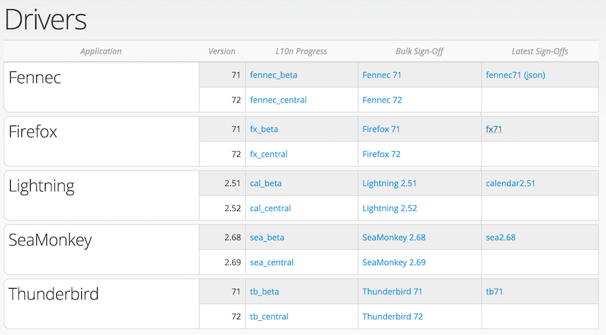

Documentation
This repository includes several documents describing how to perform internal tasks within the l10n-drivers team at Mozilla.
Topics covered:
- How to review strings and perform sign-offs for Firefox desktop.
- Manage mozilla.org localization.
- Manage other projects (Firefox Monitor, Firefox Send).
- Technical documentation and common tasks for our webdashboards.
- Perform common and advanced tasks on Pontoon like adding new locale, and creating a new project.
- Other miscellaneous documents related to localization tasks.
How to read these documents
You will need a Unix-like environment (Linux, macOS) to run most of the tools. Across the entire documentation, commands to run in a terminal are described like this:
$ composer update
$ is not part of the command, it just indicates the terminal prompt. The command to type or copy and paste is simply composer update.
In several occasions documents use aliases instead of the complete path to commands: for example lang_update instead of path_to_langchecker_clone/app/scripts/lang_update. Check Setting up a Linux Virtual Machine for Webdashboards for instructions on how to setup a virtual machine running on Linux Ubuntu with all the necessary packages and aliases.
Updating the documentation
Please see the README file in our GitHub repository.
L10n and android-l10n
Some documentation specific for common tasks regarding android-l10n and l10n:
Adding new locales to specific projects
These are instructions in order to add new locales to Android mobile products living within the android-l10n project.
Edit the l10n.toml file(s)
All android-l10n products live within the android-l10n project. Depending on the product that requires a new locale to be added, the corresponding l10n.toml file will have to be edited by adding the new locale code in it.
The l10n.toml files live in their corresponding project folder, located here for:
Each l10n.toml file typically looks like this:
basepath = "."
locales = [
"ab-CD",
"an",
"ar",
"as",
"ast",
"az",
...
]
# Expose the following branches to localization
# Changes to this list should be announced to the l10n team ahead of time.
branches = [
"master",
]
[env]
[[paths]]
reference = "app/src/main/res/values/strings.xml"
l10n = "app/src/main/res/values-{android_locale}/strings.xml"
Identify the locales section, add the desired new locale code in this list. With Atom and the Sort Lines package installed, you can press F5 to make sure that the list is in alphabetical order.
Save your edited file, then commit and push from your branch to the android-l10n repository.
Note that all products except Firefox for Fire TV share strings with Android Components, so you will also have to edit the Android Components l10n.toml file and add the new locale there.
Add new locales to Pontoon
Once the patch has landed, the new locale has to be added in Pontoon as well. The steps to follow can be found in the existing Pontoon documentation here.
L10n and Firefox desktop
Some documentation specific for common tasks regarding Firefox desktop and l10n:
- Set up the environment.
- Adding a locale to Pontoon.
- Adding a locale to Nightly builds.
- Adding a locale to Beta and Release builds.
- Set up searchplugins.
- Removing a locale.
- Running Fluent migrations.
- FAQs for Firefox and L10N.
Adding a new locale to Pontoon
- If the locale is not available in Pontoon yet, consult this document for instructions on how to add it.
- File a bug to create a new Mercurial repository in l10n-central. Several bug templates, including one to request a new repository, are available in this page. For more information about these templates, refer to this document.
- Push at least one change to the repository, otherwise Pontoon will not pick it up during sync. The safest change is to initialize the
toolkit/chrome/global/intl.propertiesfile with the correct values (example).
Once the repository is available and contains at least one commit, the locale can be added to the Firefox project in Pontoon.
Adding a new locale to Nightly builds
- File a tracking bug and dependencies to add the new locale
- Verify content in l10n repository
- Set up searchplugins
- Add new locale to build configuration
- Verify product-details configuration
File a tracking bug and dependencies to add the new locale
The first step is to create all the bugs you need for this new locale. Let’s consider Lao (lo) as an example:
- Locale:
lo. - Language:
Lao. - Component: leave
Otherif there’s no component on Bugzilla yet, otherwise type in the component name in theMozilla Localizationsproduct (in this caselo / Lao). - Name: first name of the locale leader. It will be used as part of the bug messages.
- Bugzilla ID: Bugzilla ID (email address) of the locale leader. It will be used to CC them to all these bugs.
- Application: leave Firefox.
- Version: leave the default.
Click the Create Buglinks button, and a set of links will appear at the bottom of the page. Not all of them might be needed, for example LDAP is required only for Tableau access, repositories might already exist, etc. Make sure to always start with the shipping link, since that’s going to be the tracker bug, with an alias used in other bugs to set dependencies (fx-l10n-LOCALECODE, fx-l10n-lo in this example).
Always double check the content of the bugs for errors or outdated content. If the information is obsolete, you can update the templates in this Wiki page (it will require a new deployment of Elmo to production to update the code generating the links).
Verify content in l10n repository
Before enabling the build, it’s a good idea to perform some basic checks:
- Check
toolkit/global/intl.properties(en-US version) for evident mistakes. - Check if there’s a
region.propertiesfile inbrowser/chrome/browser-region/region.properties, if needed replace it with the stock version.
Set up searchplugins
Check the Set up searchplugins document for detailed instructions on how to set up searchplugins for new locales. This has become an optional step for setting up Nightly builds, but it remains mandatory before allowing the locale to ride the trains to Beta and Release.
Add new locale to build configuration
First of all make sure that your environment is correctly set up, update your local mozilla-unified clone and make sure it’s on the central bookmark:
$ cd ~/mozilla/mercurial/mozilla-unified
$ hg pull -u
$ hg up central
The first file to modify is browser/locales/all-locales, open it with your text editor of choice.
$ atom browser/locales/all-locales
And add the new locale to the list. With Atom and the Sort Lines package installed, you can press F5 to make sure that the list is in alphabetical order.
The second file to modify is browser/locales/l10n.toml. This is the beginning of the file:
# This Source Code Form is subject to the terms of the Mozilla Public
# License, v. 2.0. If a copy of the MPL was not distributed with this
# file, You can obtain one at http://mozilla.org/MPL/2.0/.
basepath = "../.."
locales = [
"ach",
"af",
"an",
"ar",
"as",
...
Identify the locales section, and add the new locale code between double quotes, followed by a comma. As before, you can use Atom to make sure the list is in alphabetical order (make sure to select only the lines with actual locale codes before pressing F5).
After you’ve finished editing the files, check the status of the repository, and the diff.
$ hg status
M browser/locales/all-locales
M browser/locales/l10n.toml
$ hg diff
diff --git a/browser/locales/all-locales b/browser/locales/all-locales
--- a/browser/locales/all-locales
+++ b/browser/locales/all-locales
@@ -51,17 +51,16 @@ ja
kn
ko
lij
+lo
lt
ltg
lv
diff --git a/browser/locales/l10n.toml b/browser/locales/l10n.toml
--- a/browser/locales/l10n.toml
+++ b/browser/locales/l10n.toml
@@ -59,17 +59,16 @@ locales = [
"kn",
"ko",
"lij",
+ "lo",
"lt",
"ltg",
"lv",
M in hg status indicates that the file has been modified, + in hg diff that the line has been added. Follow the instructions available in this document to create a patch, submit it for review, and land it.
Verify product-details configuration
Once a locale is added to Nightly builds, product-details will pick up automatically the new build. In order for the new build to be listed on mozilla.org, the language name needs to be available in languages.json. If missing:
- Open a pull request against the
productionbranch of product-details (example). - The language name needs to use Unicode code points in the format
\uXXXXfor non ASCII characters.
The easiest way to convert the language name from UTF-8 is to use Python's JSON module. For example, to convert Tibetan (བོད་སྐད་):
$ python -c 'import json; print(json.dumps("བོད་སྐད་"))'
"\u0f56\u0f7c\u0f51\u0f0b\u0f66\u0f90\u0f51\u0f0b"
The final entry in product-details would look like this (bo is the locale code for Tibetan):
"bo": {
"English": "Tibetan",
"native": "\u0f56\u0f7c\u0f51\u0f0b\u0f66\u0f90\u0f51\u0f0b"
},
Updates to product-details are pushed to production every time a new Beta or Release build is released. In case of urgency, updates can be triggered manually by Release Engineering.
Adding a new locale to Beta and Release builds
The majority of the work has already been completed when setting up Nightly builds. There are a few prerequisites before adding a new locale to Beta and Release:
- Localization should have reached a good level of completion, especially for user facing parts of the UI.
- Localization team has demonstrated a consistent effort, being able to keep up for at least a couple of cycles with the incoming flow of new strings.
- L10n-drivers have performed testing of the builds on different operative systems without identifying critical issues.
- There is a relevant number of users on the Nightly channel. This number varies based on the language, for minority languages 10-20 users is a good result. Also, a trend showing growth is important as well.
- Set up searchplugins, if configuration was not completed before enabling Nightly builds.
- Make sure that
MOZ_LANG_TITLEintoolkit/defines.inchas the correct value, since it’s used to set up the language pack on AMO.
To track this work, you need to file a bug in Firefox::Build Config (like this example), blocking the original tracking bug for the locale (fx-l10n-LOCALE).
Verify language name
The language name associated to the locale code is displayed in a few places in Firefox interface (language settings for web content, contextual menu for dictionaries). The language name needs to be defined in:
- languageNames.ftl.
- mozIntl.jsm (in the
availableLocaleDisplayNamesconstant,languageset).
Add locale to build configuration
First of all make sure that your environment is correctly set up, update your local mozilla-unified clone and make sure it’s on the central bookmark:
$ cd ~/mozilla/mercurial/mozilla-unified
$ hg pull -u
$ hg up central
The file to modify is in browser/locales/shipped-locales, open it with your text editor of choice.
$ atom browser/locales/shipped-locales
And add the new locale to the list. With Atom and the Sort Lines package installed, you can press F5 to make sure that the list is in alphabetical order.
After you’ve finished editing the file, check the status of the repository, and the diff. Let’s consider for example the task of adding Urdu (ur).
$ hg status
M browser/locales/shipped-locales
$ hg diff
--- a/browser/locales/shipped-locales
+++ b/browser/locales/shipped-locales
@@ -83,14 +84,13 @@ son
te
th
tr
uk
+ur
uz
vi
xh
zh-CN
M in hg status indicates that the file has been modified, + in hg diff that the line has been added. Follow the instructions available in this document to create a patch, submit it for review, and land it.
You also need to set the relnote-firefox flag to ? in the bug, the suggested comment is Suggested for release notes: "Locale added: LANGUAGE_NAME (LOCALE_CODE)".
In order to have builds when the Beta cycle starts, make sure to sign-off the locale on the dashboard (elmo) for central before next merge day, and verify that a sign-off is correctly available on beta before beta1.
Update language pack settings on AMO
The language pack for the new locale will be uploaded automatically by release automation on addons.mozilla.org (starting with the Beta version). A few follow-up manual steps are needed:
- The
Mozillaaccount needs to be added as author for the language pack. - The
target_localefield needs to be set for the language pack (via Django admin UI). - The locale needs to be defined in this JavaScript file.
For the first two steps, an email needs to be sent to AMO administrators (amo-admins(at)mozilla.com).
These steps will make the language pack available in both the Language Tools page and the API used by Firefox to add new languages from preferences.
Removing a locale from Firefox desktop
Removing a locale from Firefox builds should be the last step in a long series of passages. A locale is removed when:
- There’s no visible activity in Pontoon for a year.
- The translation level of Firefox is dropping, causing a good portion of the user interface to appear in English.
- Outreach to existing community and locale leaders doesn’t produce results.
- Attempts to find new localizers, via social networks and other tools (e.g. snippets), doesn’t find any potential contributors.
Removing a locale from Nightly
If a locale is only shipping in Nightly, it’s enough to remove the locale from build configuration.
The process is identical to the one use to add a new locale, just removing the locale code from browser/locales/all-locales.
Locale also needs to be removed from Ship It.
Removing a locale from Beta and Release
Removing a locale already shipping in official builds (Beta, Release) is a much more complex process. These are the steps:
Mercurial repositories and Bugzilla components are not removed when dropping a locale.
Given the number of teams and processes involved, a tracking bug should be filed (example).
Check usage statistics
Existing users for this locale need to be moved to another language, otherwise they would remain forever on an obsolete build. The first step is to determine the current usage statistics:
- Check the number of ADIs for this locale on Tableau.
- Check usage on Telemetry using a query similar to this one.
If the locale has a significant userbase (in the hundreds of users), you need to determine the best locale to fall back to. Possible sources of information are:
- Wikipedia page for the language to determine where it’s spoken, and if there are other languages commonly spoken in the area.
- Tableau for the language distribution in these countries.
You also need to verify with Business Development if there are contractual obligations regarding search engines.
For example, Belarusian was recently removed from builds:
- Belarusian is the official language of Belarus. The Wikipedia page also has information about the number of people speaking both Russian and Belarusian in the region.
- Russian is an official language of Belarus.
- Russia has a low percentage of population speaking English.
For these reasons, Russian was selected as the best fall back language for Belarusian. Unfortunately, sources might not always point into the same direction, in some cases en-US might be the only viable option.
Redirect existing users to another locale
Once identified the language to fall back to, a bug needs to be filed in Release Engineering::Releases to redirect users via update snippets. An example of such bug is available here.
Remove locale from Beta builds
The process is identical to the one use to add a new locale, just removing the locale code from browser/locales/shipped-locales in Beta. The change will ride the train to Release at the end of the cycle.
Fluent migrations
Fluent migrations are used to migrate existing translations from legacy formats (DTD, properties) to Fluent, or existing Fluent messages to new messages or different FTL files.
At the core of each migration there is a Python file, called migration recipe, that instructs the system on how to port existing translations to Fluent. Typically, a patch migrating content to Fluent will:
- Add new Fluent strings or files.
- Remove obsolete strings.
- Include a migration recipe.
Once such patch lands in mozilla-central, it will be converted as part of the cross-channel generation, and pushed to a quarantine repository (gecko-strings-quarantine). At this point, this new content is not visible yet in Pontoon.
The goal of migrations is to port existing translations to the new format without forcing community to retranslate them. For that to happen, migrations need to be performed before the new strings are pushed to the official gecko-strings repository, and become available in Pontoon.
This means that patches including migrations should only be pushed from the quarantine repository to gecko-strings following the steps described in this document.
Running Fluent migrations
This section of the document describes in detail which operations need to be performed in order to run migrations on over 150 Mercurial repositories for Firefox.
Prerequisites
Several access rights are required:
- Write access to l10n-central, i.e. SSH access with
active_scm_l10nrights. It’s possible to check your Access Groups in your profile on people.mozilla.org. - Sign-off rights in Elmo.
- Admin access to Pontoon.
- An account on Heroku with access to Pontoon apps.
In order to run migrations:
- Install the fluent.migrate Python package.
- Clone all l10n-central repositories.
- Clone gecko-strings-quarantine and gecko-strings.
A set of scripts to automate cloning and updating of the l10n-central repositories is available here.
Ensure there are no blocking issues in gecko-strings-quarantine
As part of migrations, content needs to be pushed from the quarantine repository to gecko-strings. Since content can’t be pushed selectively, any pending issue needs to be solved before starting the process. For more information about the review process, see this document.
Clean up existing sign-offs
Migrations will create new changesets in each of the repositories, resulting in new sign-offs to review for the PM in charge of Firefox or l10n-drivers.
Before starting, sign off in Elmo all available changesets for the current Firefox Beta in the Bulk Sign-offs view. More details about the sign-off process are available in this document.
In case of issues with one or more locales, the best solution is to either fix or unapprove the problematic strings in Pontoon, and wait for the changes to land in the next scheduled sync, in order to completely empty the queue of sign-offs.
Stop sync in Pontoon
Before starting the migration process, sync needs to be suspended for all projects relying on the l10n-central repositories. The list of affected projects is:
- Firefox
- Thunderbird
- Seamonkey
- Lightning
In order to disable sync, access each project from the admin panel, and select the checkbox SYNC DISABLED at the bottom of the page, then SAVE PROJECT.
This is needed for several reasons:
- It removes the chance of conflicts in the l10n repository between the running migration and Pontoon committing changes for other projects.
- The migrated strings need to be added in the same cycle as the new strings for the source language (
en-US). If they’re added before, Pontoon will ignore them, creating a misalignment between internal database and l10n repositories. If they’re added after, these strings will be displayed as missing in Pontoon, and some locales might try to translate them while it’s not needed.
The last step here is to make sure that the current sync process has completed, then increase the resources assigned to the Heroku worker:
- Check the Sync Logs page, click on the last one, and make sure that there are no projects with
---in theDURATIONfield. - In Heroku, switch the worker from
PM(Performance-M dynos) toPL(Performance-L dynos).
It’s important to make sure that there is no sync in progress when upgrading the worker, because that will kill any pending process.
Test the migrations locally
A series of tools and helpers to run migrations is available in this repository:
- Clone the repository locally and follow the instructions available in the README to set the configuration file.
- Add the new migration recipes in the
recipesfolder. The script will look for any Python file starting withbug_in that folder, so it’s possible to run multiple migrations in one pass. More information about the folder’s structure are available in the repository’s README.
At this point, while each migration has been tested as part of the review before landing, it’s always good to run the migration against one locale, e.g. it:
- Update the locale’s repository, check the results of
compare-locales. Assuming l10n repositories are cloned in~/migrations/locales, and the quarantine repository in~/migrations/gecko-strings-quarantine, the command to run iscompare-locales ~/migrations/gecko-strings-quarantine/_configs/browser.toml ~/migrations/locales it. Save the output in order to compare it with the results after the migration. - Run the migration, without pushing, only for
it:./scripts/migrate it wet-run. Then run compare-locales again, and check if the results are as expected: migrated strings should not appear as missing anymore, and there should be no errors. - If everything looks as expected, re-run the script adding the push option
./scripts/migrate it wet-run push.
Push updates to gecko-strings
Before pushing updates to the official gecko-strings repository, make sure that:
- The new strings and migrations are available in the quarantine repository.
- There are no pending issues that prevent the current content to be exposed in Pontoon.
- The migration has been tested locally and works as expected.
Once the new strings are pushed to gecko-strings, there’s no easy way to roll back, and the procedure needs to be completed before re-enabling sync in Pontoon. The alternative is forcing all locales to retranslate this content, and losing the entire benefit of migrations.
Pontoon relies on a different repository, that is generated every 20 minutes based on the content of gecko-strings. That’s why it’s useful to run this update before starting the actual migrations.
Run migrations
To run the migration on all repositories, use ./scripts/migrate wet-run push in the same environment used for testing. For each repository, this will:
- Pull changes.
- Run the migration and commit changes.
- Push changes to the remote.
The duration of this step depends on the number of migrations and the speed of the Internet connection, but it should take about 20-30 minutes.
While migrations run, it’s important to look out for errors in the console, even if the standard output is quite noisy:
- Python errors with a stack trace are unlikely at this stage of the development, since it means that the code encountered a scenario that it’s unable to manage. If something is broken in the
fluent.migratepackage, or there are issues with Python dependencies, the migration should stop at the very beginning. - For Mercurial, one potential error scenario is a push that would create a new head in the remote repository (
abort: push creates new remote head, followed by a changeset ID). The script automatically pulls from the remote repository before running migrations, and Pontoon’s sync is disabled, so that shouldn’t happen, unless a previous migration failed to push to remote and left unsynced local commits. In this case, the easiest solution is to clone the repository for this locale from scratch, and run the migration only for that specific locale.
Re-enable Sync in Pontoon
Once the actual migration is complete, the next step is to re-enable sync in Pontoon. This needs to be done one project at a time, since Pontoon takes a lot of time processing this amount of changes, creating a bottleneck in the sync for all projects.
Before starting, make sure that the Pontoon repository has the commit with the new strings.
- Access the admin panel for Firefox, click the
SYNCbutton at the bottom, then deselectSYNC DISABLEDand clickSAVE PROJECT. - Clicking the
SYNCbutton will spawn a new sync process just for Firefox. Check the Sync Logs page to see when it’s finished. Depending on the amount of changes, this can require from 15 to over 30 minutes. It’s also possible to monitor the status in Papertrail, accessible from the Resources page in Heroku, and filter the log using the stringapp/worker.
Once the sync is completed, repeat the process for each of the other projects (Thunderbird, Seamonkey, Lightning).
When sync is re-enabled for all projects, switch back the worker to PM in Heroku. Once again, make sure that there are no running sync processes before doing it.
Update sign-offs
At this point all locales with migrated strings will have a new changeset available for sign off. Given that the changes are relatively safe, bulk sign-offs can be used, monitoring only a few locales to double check the output (the only diff will be from the migration).
This can be done concurrently with the previous step.
Firefox L10N FAQs
This document includes a series of frequently asked questions regarding Firefox and localization, mostly targeted at developers, but useful for product managers and engineering program managers as well.
- General
- Schedule and release cycle
- Development
- Translation completion and community
- Is my feature going to be localized in language X before launch?
- How do I communicate with localizers about my feature or patch?
- I see pending suggestions in Pontoon, how can I get them approved?
- How can I check if my feature is localized?
- How can I see all translations available for a specific string?
General
Who can I contact if I have more questions?
A Program Manager (L10N PM) is assigned to any Mozilla project that is localized through community. You can find this information in Pontoon for any project in the header section, and more information about the localization team is available in the Mana page dedicated to Localization (available to staff/NDA only).
Should I enable my feature only for English, or ship it in English for everyone?
Shipping a feature only for en-US is not great, since it creates confusion for users: features are described in SUMO articles or publicized in blog posts, but not available for more than 60% of Firefox user base.
Shipping a feature in English for everyone is not a good option either: as an English speaker, imagine starting your browser and finding a window in Chinese.
In the end, both options are a product decision, and the localization team can help assess the impact on users and community. How to ship a feature only to en-US users depends on several factors (technology, information available at the time the feature is loaded, etc.), and the best approach is to get in touch with the engineering part of the Localization team (aka “tech team”).
Schedule and release cycle
I landed strings in mozilla-central, when are they going to be localized?
New string changes are periodically exported from mozilla-central into a repository called gecko-strings-quarantine, a unified repository that includes strings for all shipping versions of Firefox (nightly, beta, release). This repository is used as a buffer to avoid exposing potential issues to all locales working on Firefox.
Typically once or twice a week, the content of the quarantine repository is pushed to the official repository, called gecko-strings, used by Pontoon as source reference. At this point, strings can be localized by community.
Can I uplift a patch to Beta or Release?
While Nightly is always open for new strings, Beta and Release are string frozen, meaning that patches with new strings are normally not allowed to land.
Uplifts need to be evaluated case by case, but in general they should be avoided in the context of a 4-weeks release cycle. Possible alternatives are uplifting ad-hoc patches without string changes, or exposing the feature/change only to English users.
One more thing to consider is the timing of the uplift. The second part of the Beta cycle is completely frozen, meaning that we can’t take any updates to localization and ship it in that version. Anything uplifted close to the deadline, or after, will ship untranslated. For more details about the Beta timeline for l10n, see the Sign-offs document.
I need to add new strings for version X, do I still have time?
If version X is in Nightly, i.e. currently developed in mozilla-central, there is time to land until merge day, when the code moves from mozilla-central to mozilla-beta.
The sooner you land content in mozilla-central, the higher will be the chances that the content will be localized in several languages before reaching release.
Development
Where can I find guidelines for developers?
A document including plenty of best practices is available on MDN, while specific information around Fluent is available in this document. In case of doubts, reach out to the Firefox L10N PM or localization team for clarifications.
How can I get my strings localized?
Strings need to be added to localization files in known locations within the mozilla-central tree. For all the technical details about these paths and the supported formats, see this document.
Once strings land in mozilla-central, they will be exposed for localization in Pontoon within a few days.
Where can I find the localized strings?
All shipping versions of Firefox are built from a single Mercurial repository for each locale (l10n-central). Repositories are available here.
Can I land content without exposing it for localization?
If your content is not stable, or you want to iterate quickly over it before exposing it for localization, it’s possible to land a string file outside of the known paths, and access it from the code.
For Fluent, you can follow examples like this patch, where the FTL file is stored outside of the localizable paths, and loaded as “preview”.
How can I test a different locale?
The answer depends on the version you want to test.
Official builds:
- On Beta and Release, you can switch the UI language directly from Firefox settings. You can also download localized builds from mozilla.org.
- On Nightly and Developer Edition this feature is disabled, since language packs are not reliable. You can still manually install language packs for the version you’re using directly from FTP (Nightly, DevEdition changing the build in the URL), then enable the language switcher by setting
intl.multilingual.enabledtoTruein about:config.
Local builds:
- If you’re using Fluent, you can test your feature for localizability issues, like layout constraints or hardcoded content, using pseudolocales.
- If you’re building locally, you can try installing the latest language pack for Nightly (it might not work as expected if you’re adding new strings, or break after an update). Language packs are stored on FTP inside the
linux-x86_64/xpi/folder for daily builds, or latest-mozilla-central-l10n. - You can build directly in a different locale (no support for artifact builds).
- It’s possible to add specific l10n repacks to a Try Server push. For example, to add French: select Add new Jobs, then select the
frlocale inL10n-Rpk. Once the job is completed, builds will be available as artifacts underL10n (BsX), whereXchanges depending on the locale.
Translation completion and community
Is my feature going to be localized in language X before launch?
Each community will localize new content at different times: some locales will have a complete localization within hours, while others might take weeks or months. Our continuous localization infrastructure allows us to release Firefox with incomplete translations falling back on a backup locale in case of missing strings or errors.
Given that localization is managed by community volunteers, there is no SLA or guarantee that a product will be completely localized before launch. For more information, see this page on Mana (available to staff/NDA only).
How do I communicate with localizers about my feature or patch?
If there is some specific information that you want to convey to localizers, like testing instructions or particular issues to look out for, get in touch with the L10N PM for Firefox. They will help you identify the best channel and way to relay this information.
I see pending suggestions in Pontoon, how can I get them approved?
Standard users in Pontoon can only provide suggestions: these translations are visible in Pontoon, but don’t get committed to repositories or ship in products.
For each locale there are translators and managers that can review these suggestions, and eventually approve them. The timing depends on each locale’s workflow.
How can I check if my feature is localized?
There’s no easy way to see this information in Pontoon. If all the strings are stored in a single file, only used for that feature, or you have a detailed list of all the strings used, it’s possible to extract this data manually. Get in touch with the Firefox L10N PM for more information.
How can I see all translations available for a specific string?
Pontoon doesn’t allow to see all translations for a specific string, but you can use Transvision for it:
- Search for the string (by ID or text), making sure that gecko-strings is selected as repository
- In the results, click on the green
all localestag close a string to see all available translations. Results are also available via API (linked at the bottom of the page).
Review process
- How to review strings in Firefox desktop
- How to manage sign-offs for Firefox desktop and Firefox for Android
Sign-offs for Firefox desktop and Firefox for Android
- Overview
- Timeline and deadlines
- How to perform sign-offs
- Bulk sign-offs
- Things to check when doing a sign-off
Overview
Sign-offs are a way for l10n-drivers to indicate that a specific changeset is technically sound and ready to ship to general audience in Firefox (Beta, Release). Currently, thanks to cross-channel, we ship all versions of Firefox from a single localization repository, but each channel uses a different snapshot in time of that repository.
While sign-offs are performed on l10n.mozilla.org (Elmo), the resulting data is stored in each tree (mozilla-central, mozilla-beta, etc.) to be used directly by the build system. A job, called l10n-bumper, runs on Taskcluster every hour, retrieves sign-off information from Elmo via API, and stores it in a file called l10n-changesets.json:
- For Nightly (
mozilla-central), l10n-changesets.json always uses the revisiondefault, and it’s only updated when changing the locales available in the build. That means that Nightly builds always use the tip of the l10n repository, i.e. the latest changes available for each locale. - Beta builds (
mozilla-beta) only use the signed off changesets for each locale. Unlike inmozilla-central, l10n-changesets.json contains the changesets signed off in Elmo instead ofdefault. - When the Beta code is merged to Release, l10n-changesets.json moves together with the rest of the code to
mozilla-release. That means that Release builds will use the same changesets as the last beta with the same version number, and any further change requires code uplifts.
Timeline and deadlines
This is how Beta looks like in a 4 weeks release cycle, with relevant milestones.
Sign-offs on Beta are not possible through the entire cycle: sign-offs deadline is on Wednesday, about 2 weeks before the release, to allow time for at least one more Beta build before the end of the cycle.
While it’s still possible to take last minute sign-offs during the rest of the third week, for example to fix bugs or improve coverage for tier 1 languages. that comes with increased risk, since there will be no time for another beta build to test these changes. Once the code merges from Beta to Release, any sign-off update would require a manual uplift to mozilla-release and a new Release Candidate (RC) build.
Given that the Beta version is closed to sign-offs for more than 10 days, to avoid accumulating a lot of review backlog, the PM in charge can decide to take sign-offs on the Nightly version for the remaining part of the cycle.
As explained at the beginning, sign-offs are not used for Nightly builds, but this approach has a few benefits:
- It reduces the content to review at the beginning of the Beta cycle. That’s particularly important when it comes to the amount of changes generated for Firefox desktop by Fluent migrations.
- Since sign-offs are tied to a version number, when Nightly moves to Beta, the new Beta version will already have updated sign-offs and won’t fall back to outdated changesets. As a consequence, the first beta of the cycle will ships with better l10n coverage. In the example above, you start taking sign-offs for 77 at the end of the Nightly cycle. When 77 moves to Beta, it will already have update content compared to the last 76 sign-offs.
Updating release
When the code moves from mozilla-beta to mozilla-release, l10n-changesets.json is frozen, as l10n-bumper is not configured to run against the release branch, and Elmo doesn’t allow to sign off changesets on the release channel.
In case of severe issues affecting one or more locales, it’s still possible to manually update the shipping changesets. A patch needs to be provided for l10n-changesets.json in mozilla-release branch and approved for uplift by Release Drivers (see for example this bug and associated patch). Note that a dot release is needed in order to ship the updated version to users.
The same process applies to ESR versions, as long as the associated esr repository is included in the current version of cross-channel.
How to perform sign-offs
This page only includes sign-offs for Firefox desktop (fx_beta) and Firefox for Android (fennec_beta) beta.

A green checkmark is displayed in the Status column if the locale has a sign-off, while it’s empty if there are no sign-offs. This only happens for brand new locales that are only shipping in Nightly.
The Action column can display several icons:
- A prohibited icon indicates that there is no activity after the last sign-off (belonging to a previous version), and therefore it’s not possible to do an updated sign-off.
- A sparkline icon indicates activity that should be checked:
- Green indicates that the translation is complete (no error, no missing strings).
- Orange means that the product is still incomplete.
- Red means that there are errors in the localization. The number of errors and warnings is also reported within the table.
To perform the sign-off, click on the sparkline icon. It will open a new page, showing information about the last sign-off, and the changesets that follow it.

For each changeset, it’s possible to check compare-locale’s results by clicking on the link in the second column from the left. Errors and warnings would be reported in the link too.
Some changesets won’t have a link to compare-locales’s results (e.g. the second row in the image above). That indicates a changeset that doesn’t affect the product you’re currently signing off (e.g. a Thunderbird change in Firefox), and it’s not a good candidate for sign-offs.
By clicking in one of the cells in the rightmost column, by default you can display a diff between the latest changeset and the most recent sign-off. Note that both circles can be dragged, to display the diff between specific changesets. It’s also possible to load more changeset at the bottom of the table using the Load more button.

In this view, green means that content has been added, red it’s been removed, while orange indicates a change. Each level of the diff can be collapsed by clicking on the same line as the file or folder name.
Once you have reviewed the diff, you can return to the previous page, and sign off the changeset by clicking the sign off… button. To accept the sign-off, click the Sign off button:

To explicitly reject a sign-off, unselect the Sign off and accept checkbox. Then click on Review… and reject the sign-off with a reason.

Bulk sign-offs
A new view has been added to Elmo to perform sign-offs in bulk. This is particularly useful, for example, after running Fluent migrations, when all locales receive changes and would require an updated sign-off.

In the initial page it’s possible to select a product version. For example, clicking Firefox 71 in the Bulk Sign-Off column will lead to this view:

The number of rows displayed depends on the number of changesets available to sign off for the requested product version. If there aren’t new changesets compared to the existing sign-offs, the table will be empty.
In each row:
- The first column shows the locale code, with a link to the locale’s sign-off page for the product version (e.g.
/shipping/signoffs/ach/fx71). - The second column has the summary of
compare-locales’s run for the latest changeset (link points to the full results). If empty, it means that there are no results available: either checks are still queued, or they didn’t run because the latest changeset doesn’t include files relevant for the requested product version (e.g. only Thunderbird changes, when the sign-off is for Firefox). - The third column links to the diff view between the last accepted sign-off and the latest changeset.
After reviewing the diff, to accept a sign-off you can click the Accept button. It’s important to note that there will be no confirmation dialog, and it’s not possible to reject a sign-off from this view. The row will be automatically removed from the table after accepting a sign-off.
Things to check when doing a sign-off
The first thing to do is to look at errors and warnings. For warnings, always double check if the number increased from the last sign-off, identify which changeset introduced new warnings, and if they’re acceptable.
Here are a few more things to look out for when doing sign-offs:
- Strings, or portion of text, remaining in English or becoming empty.
- Translated keyboard shortcuts (command keys). Unlike access keys, they should remain identical to English.
- Changes to files that require review, like
region.properties. - Changes to branding, i.e. translated or transliterated brand names (Mozilla, Firefox).
- Changes to
extensions/spellcheck(dictionaries). We can only ship dictionaries if they have a compatible license. If a dictionary was already present, it’s likely to be OK. A brand new dictionary should land with a bug associated.
Reviewing strings in Firefox desktop
Review landed strings
Starting from Firefox 57, all versions of Firefox desktop ship by localizing a single repository containing the reference English strings, called gecko-strings. It is generated from strings landing in the code repository for each branch (e.g. mozilla-central and comm-central for Nightly, mozilla-beta and comm-beta for Beta, etc.), and it’s exposed to localization tools like Pontoon.
There is a second repository, gecko-strings-quarantine, used as a buffer to avoid exposing poor strings to the larger audience of localizers.
The localizations for all channels can be found in l10n-central, with a single repository for each locale.
The review process consists of three parts:
- Review strings landing in
mozilla-central. Currentlycomm-centraldoesn’t undergo a similar review process. - Review strings landing in
gecko-strings-quarantine. Currently, the quarantine repository is updated manually every few days. - Push reviewed strings to
gecko-strings, and start the localization process.
Review strings landing in mozilla-central
You can get the list of changesets touching localized strings in the last 2 days from mozilla-central. Adjust the pushdate part if you want to see more or less days.
There are some irrelevant changesets, like en-US dictionary updates, but the majority of landings are relevant and need to be checked for localization issues.
You need to open each changeset, and identify changed files that are relevant for localization (.properties, .dtd, .ini).
Things to look out for:
- Unclear strings and missing localization comments: the best way to identify them is to translate the strings, only having the string and comment as context (not the entire file, or the bug). For example: is the word used both a noun and a verb in English? Is the ID clear enough to give context (e.g.
buttonLabel)? - String changes without new IDs.
- Duplicated strings.
- Localization issues, like misused plural forms, unclear comments, etc.
In case of issues, you have two options:
- Ask sheriffs (via bug or Matrix in #sheriffs) to back out the patch.
- Ask clarifications in the bug, and decide if it’s worth to stop exposing new strings until the issue is fixed.
Review strings landing in gecko-strings-quarantine
The next step is to spot check changes landed in gecko-strings-quarantine. Here are some things to look out for:
- Check if a changeset is removing strings. This should happen only when a string landed in Nightly and was removed during the same cycle, or at the beginning of a release cycle when a group of strings becomes unused in all shipping versions.
- Compare the changeset with the original landing in mozilla-central. Each changeset’s header contains a set of references (consider this example), the most important one is
X-Channel-Converted-Revision, which links to the original landing in the code repository.
IMPORTANT: Patches including Fluent migrations need to be kept in quarantine, and can only be pushed to gecko-strings following the process described in this document.
Run compare-locales against gecko-strings
A good next step to check for issues is to run compare-locales against the gecko-strings repository.
First of all make sure that your environment is correctly set up, and update your local mozilla-unified clone.
compare-locales needs to be installed on your system. You can either install a specific release, or clone the hg repository and install it via pip install -e .. You can check that compare-locales is running correctly by checking its version:
$ compare-locales --version
compare-locales 2.1
Let’s assume that:
- gecko-strings-quarantine is cloned in
~/l10n/gecko-strings-quarantine. - mozilla-unified is cloned in
~/src/mozilla-unified, and you checked out the version corresponding to the converted changeset.
Then run
$ compare-locales --unified --full ~/src/mozilla-unified/browser/locales/l10n.toml ~/l10n gecko-strings-quarantine
If you also have comm-central checked out, you can check Thunderbird and allies with:
$ compare-locales --unified --full -Dmozilla=~/src/mozilla-unified/ ~/src/comm-central/mail/locales/l10n.toml ~/src/comm-central/calendar/locales/l10n.toml ~/src/comm-central/suite/locales/l10n.toml ~/l10n gecko-strings-quarantine
When running these, you should see no errors or warnings. When running them against the central revisions, you should see no missing or changed strings, while having obsolete strings is expected. When running against beta or release revisions, expect to have changed strings, but again, no missing strings.
Note: when running compare-locales against a non-existing locale code, use the --full commandline argument to get all strings in submodules. In particular for gecko-strings, you need that, otherwise you only get the strings in the browser directory.
Run compare-locales against a localization repository
A good next step to check for issues is to run compare-locales against a localization repository frequently updated (Italian and French are good examples).
- l10n-central/it is cloned in
~/l10n/it.
To run compare-locales against mozilla-unified and Italian you can run:
$ compare-locales --unified ~/src/mozilla-unified/browser/locales/l10n.toml ~/l10n it
To run compare-locales against gecko-strings-quarantine and Italian you can run:
$ compare-locales --unified ~/l10n/gecko-strings-quarantine/_configs/browser.toml ~/l10n it
Both are really long commands, so it’s convenient to create Bash aliases in ~/.bash_profile for them, e.g.
cmp_moz="compare-locales --unified ~/src/mozilla-unified/browser/locales/l10n.toml ~/l10n it"
cmp_mozx="compare-locales --unified ~/l10n/gecko-strings-quarantine/_configs/browser.toml ~/l10n it"
Let’s start with the output of compare-locales against gecko-strings-quarantine: most of the time, it should only report missing strings. There will be obsolete strings only if a string was removed, which is a rare event in cross-channel.
For example, this is the output for a fully localized locale.
$ compare-locales --unified ~/l10n/gecko-strings-quarantine/_configs/browser.toml ~/l10n it
it:
changed: 9914
changed_w: 52351
keys: 1383
unchanged: 883
unchanged_w: 1085
91% of entries changed
Check the results for duplicated strings and errors. For example, if a new error shows up for a missing variable, it’s likely that a string changed without a new ID and introduced new variables.
The output of compare-locales against mozilla-unified is going to contain a lot of noise, since it includes all strings that are obsolete for mozilla-central, but are still needed for other branches. If you’re interested in only seeing missing strings, i.e. strings that need to be added to the l10n repository, you can grep the results by piping the output to egrep '^\s*\+'.
$ compare-locales --unified ~/src/mozilla-unified/browser/locales/l10n.toml ~/l10n it | egrep '^\s*\+'
Push reviewed strings to gecko-strings
If there are no issues in gecko-strings-quarantine and no pending Fluent migrations, the next step is to push changes to gecko-strings and expose content to tools.
One time setup: after you cloned gecko-strings-quarantine on your system, you need to edit its .hg/hgrc file, and add gecko-strings as path. While you only need https for pulling the quarantine repository, you need ssh in order to push updates to gecko-strings.
The content of ~/l10n/gecko-strings-quarantine/.hg/hgrc should be similar to this:
[paths]
default = https://hg.mozilla.org/users/axel_mozilla.com/gecko-strings-quarantine
gecko-strings = ssh://hg.mozilla.org/l10n/gecko-strings
To push the current default to gecko-strings, from the gecko-strings-quarantine folder simply run:
$ hg push -r default gecko-strings
Instead of default, you can also push a specific changeset, e.g.
$ hg push -r 4c05bc050007 gecko-strings
L10n and Firefox for iOS
Some documentation specific for common tasks regarding Firefox for iOS and l10n:
Reviewing strings for a new release of Firefox for iOS
Usually, a new release of Firefox for iOS means an update to strings. If this is the case, a pull request will be made by the iOS team, in order to land these new strings in the mozilla-l10n firefoxios-l10n repository.
At this point, the PR is reviewed by an l10n-driver - most often by the PM in charge of the project.
Let’s go over some of the steps needed over time in order to review correctly strings for a new release.
Reviewing the PR
When you’re getting close to the end of the Firefox for iOS l10n cycle, the iOS team will make a pull request in order to land new strings for the upcoming release.
Let’s consider a past PR, which was done for v6.0: https://github.com/mozilla-l10n/firefoxios-l10n/pull/19
The first thing you’ll want to do is to check the changes to the /en-US folder: https://github.com/mozilla-l10n/firefoxios-l10n/pull/19/commits/edcee6500a4cec7cd40251e0dd2c047a5ffbe3ae
Acceptable changes
Changes to attributes like tool-version and build-num are expected, they happen every time you change the version of Xcode.
Same for the utf-8 -> UTF-8 at the beginning, and version number bumping to 6.0. Note that these should now be automatically translated (so will not appear as new strings for localizers and they will not need to touch them).
Changes to comments (
Remember also that the script converts Unicode literals into UTF-8 characters. Example: https://github.com/mozilla-l10n/firefoxios-l10n/pull/19/commits/713def82602224556d797b46e3f6d611297ee3e3#diff-42d28e544c7a30099950b7a09a69f2caL2289
As you can see, the ­ was not lost - it was converted to the invisible UTF-8 character.
Potentially problematic changes (removals)
Then you start scrolling down, checking if the new strings make sense: the first one you find is NSCameraUsageDescription.
You mostly need to pay attention to the strings removed. Double-check each time that iOS team clearly realizes that they won’t be able to release updates to v5 (or any v5.x release) once strings are exported.
For example: Menu.NightModeAction.Title is removed. If it’s used in v5, and the iOS team plans to release an update to v5 in the future, localizations will miss that string.
Quickly review other locales
Once you’ve checked templates, you can pick at least one locale and see what changes:
https://github.com/mozilla-l10n/firefoxios-l10n/pull/19/commits/a1c041a012e6996bd8bdaec88f21f3c34fe383b0
Reviewing strings during the cycle
It’s good to keep an eye on the strings landing during the Firefox for iOS cycle. In fact, if you wait to review strings when the PR is already opened, it’s going to be complicated to get a fix in (until Bug 1270855 is resolved).
You should try to periodically check out the strings landing, and try to localize them in your head: how would you translate them? Would you be able to do it without the app? Is the localization comment clear enough?
You might also need to identify the bug that added that string, see if there are screenshots, or ask if the iOS team can provide one. The point below explains how to find that bug.
How to find the bug that introduced a string
Let’s consider an example of new strings for Firefox for iOS, with this past PR.
The ID is NSCameraUsageDescription, the label This lets you take and upload photos
It doesn’t have a localization comment, which is bad.
In fact currently, the only strings that can not have localization comments are strings that are located in InfoPlist.strings and Info.plist - see Bug 1277515 for more details. Otherwise, strings should always have localization comments.
So you open the main repository page: https://github.com/mozilla-mobile/firefox-ios
And use the search box at the top, searching for the string ID (or the string): https://github.com/mozilla-mobile/firefox-ios/search?utf8=%E2%9C%93&q=NSCameraUsageDescription
In this case you find two occurrences. The first one is the most interesting, so you open the file: https://github.com/mozilla-mobile/firefox-ios/blob/978bf46bb680291c61c5d21b6dc26472388a374f/Client/en.lproj/InfoPlist.strings
Then use the Blame link on top:
https://github.com/mozilla-mobile/firefox-ios/blame/978bf46bb680291c61c5d21b6dc26472388a374f/Client/en.lproj/InfoPlist.strings
On the left, you should (almost always) find the bug reference: https://bugzilla.mozilla.org/show_bug.cgi?id=1312842
Wrapping up your work
So you’ve reviewed the strings during the cycle, and the PR looks good? Wait! Don’t merge it quite yet.
You will need to announce this on dev.l10n mailing list as soon as you merge the PR. Prepare your email in advance. Here’s an example of what it should contain.
Pontoon should get the new strings automatically, but it’s always a good idea to double check just in case.
Working on mozilla.org
Some documentation specific for common tasks on mozilla.org
- Process overview to expose mozilla.org content for localization
- Working with Bedrock: running it, extracting strings from templates, tips.
- Importing translations from existing files.
- Updating mozilla.org production.
- Enable a new locale on production.
For documentation about Langchecker, see this page.
Process overview to expose mozilla.org content for localization
This document describes the tools and processes involved in converting a mozilla.org template in English to a .lang file containing localizable content and relevant information to help with localization.
This is a brief overview of the process
- In Bedrock, when a page is in the final coding review phase in GitHub and content is finalized, an L10n label is added to the PR, signaling that it is ready for string extraction.
- Strings are extracted from the identified templates, generating a temporary .lang file. The new strings are manually added to an existing en-US .lang file, or a brand new file added to the mozilla.org l10n repository. A pull request is opened to review the en-US initial content for issues or errors.
- Another PR is created in the Langchecker repository. Langchecker is the tool used to keep track of all localizable files in the l10n repositories, and contains a set of scripts used to manage the repository.
- After both PRs are reviewed and approved, a script will be run locally to propagate the en-US content into files in other locales. That means both adding a new file, or adding new strings to existing files.
- Once merged to the master branch, files will be available on www.mozilla.org repository for localization, and the merge commit will be cherry-picked to bedrock-l10n, the localization production repository. Within 20 minutes, Pontoon will display the status of the new or updated files for all locales.
- In some cases, an email through a mailing list will be sent out to communicate the localization request. At this point, the L10n tag is also removed from Bedrock’s PR.
Environment
In order to run Langchecker locally, you need a recent version of PHP (ideally 7 and above):
- Langchecker repository has instructions on how to install the tool. The Wiki has detailed informations on all the available scripts.
- While Apache is not needed (you can use PHP internal web server), it’s highly recommended.
- L10n-drivers use a VMWare virtual machine based on Ubuntu LTS. This VM includes a set of Bash aliases and symbolic links designed to simplify the workflow. You can find the script used to set up the VM here, and the list of aliases here.
Step by step details for the entire process
Extract strings from a template in Bedrock
The process is detailed in this document.
Note: you only use this generated .lang file as a reference. You still need to add comments and reorder strings before exposing them for localization.
Prepare the en-US .lang file
It is very important to have a clean, error free .lang file in en-US. Once the file is approved and content is pushed into other locales, if an error is found then, it will take much more effort to correct. If localizers have already started their work, the cleanup is even messier. At that point, it is a fix in one file versus fixes in 100+ files.
Initial review should include checking the file against the page on the testing server and checking against the template. This is to ensure that there are no hard coded strings.
Note: if there is an update to an existing page, it is advised to still generate the .lang file, and copy the new string there instead of copying it from the .html file. This is to make sure, for example, that the syntax used for variable replacements is correct, and remove eventual extra white spaces between words that are not carried over to the .lang file.
Add notes and comments to the extracted file:
Add important information at the top of the file:
- A Note (
## NOTE:) for demo/test URLs. - A Note for test instruction if necessary, for a page that is more dynamic, such as the privacy_protection_tour.lang.
- Make sure to add tags, if there are strings bound to l10n tags.
Proceed to the content of the file. Add a comment to the following type of strings to provide more context:
- Page title and description. Typically, a page title string should be translated in a short or catchy way.
- If the string contains a link, to which URL it points to. This gives context to localizers.
- If a string is behind a tag, make sure to add the tag bindings.
- A new string behind a tag makes another string obsolete. Make sure to add an obsolete comment to help localizers prioritize their work, and that old and new strings are next to each other. This will also make removal of old strings easier in further updates.
- A comment for an alternative to an expression that may not be culturally relevant, or to a pun that doesn’t translate well.
- Check English content for capitalization, hyphenated word to make sure they are consistent with the Firefox style guide (macOS vs. MacOS, sign in to vs. sign into).
When all is done, create a PR in the www.mozilla.org repo for review. Describe what the PR is for, add references to the Bedrock’s pull requests to add context for the review.
Check for possible errors such as duplicates or unmatched strings before requesting for review. In order to do this, you will need to run Langchecker locally, and make sure that both the l10n repository and Langchecker’s are using the branches you’re working on.
Work with the scripts in Langchecker
Below are some of the common commands and purposes of using Lanchecker.
You use Langchecker for the following purposes:
- app/config/sources.inc.php: modify this file when there is a new or an updated .lang: add file name, define supported locales, deadline and flags.
- app/config/locales.inc.php: bootstrap a new new locale on Mozilla.org
The following commands are used for some common tasks:
lang_updateis to populate new and revised content in the en-US into localized files.mark_activewill add an## active ##tag at the beginning of the file after checking that the entire file is translated and no errors are detected. The associate template will be live on production.add_tagstracks the completion of the tagged strings, and add the tag on top of the file when all are translated.
For more details, check here.
This document details the process to update production repo.
Pontoon and Communication
Within 20 minutes, the content change will show up on Pontoon project dashboard. L10n-driver will update project deadline (high level against all other projects) and page level deadline (if applicable) when viewing the entire mozilla.org page status in a given locale.
An email communication about this localization request will be sent out soon after.
Working with Bedrock
This document covers a few tasks and tips regarding Bedrock.
Running Bedrock
You can install Bedrock by following the instructions available in this page.
If you’re using the virtual machine described in this document, Bedrock is already installed in ~/mozilla/git/bedrock.
Move into the main folder, activate the Virtual environment, and run the server
$ cd ~/mozilla/git/bedrock/
$ source venv/bin/activate
$ ./manage.py runserver
In a different terminal window run
$ gulp
At this point Bedrock will be available at http://localhost:8000
In the virtual machine the locale folder is a symbolic link to the mozilla.org trunk l10n repository.
Don’t forget to exit the virtual environment by running deactivate when you’re finished.
Extracting strings from a template
The first part is to identify the template (or templates) you need to extract strings from. For example, assuming that you want to extract strings from bedrock/mozorg/templates/mozorg/contribute/signup.html, you would run from Bedrock’s main folder:
$ cd ~/mozilla/git/bedrock/
$ source venv/bin/activate
(venv) $ ./manage.py l10n_extract bedrock/mozorg/templates/mozorg/contribute/signup.html
If the last command returns any error, try reinstalling the requirements with
$ pip install -r requirements/dev.txt
At this point a .lang file will be created inside /locale/templates with all the strings extracted. The name of the file depends on several factors: for example the template could include another template that specify a specific .lang file so, instead of having locale/templates/mozorg/contribute/signup.lang, you have locale/templates/mozorg/contribute/index.lang.
The suggestion is to always remove the templates folder before doing an extraction, to make sure you start from a clean situation.
Note that you can also use wildcards in the command, e.g. ./manage.py l10n_extract bedrock/mozorg/templates/mozorg/contribute/*.html, but you should try to extract strings only from the template you need.
One final note: you only use this generated .lang file as a reference, you still need to add comments and reorder strings before exposing them for localization.
Notes about templates and l10n
Wrapping strings
<span class="outline-button more">{{ _('Start using the Mozilla Stumbler app') }}</span>
Localizable strings are wrapped like _('This'). That means you can simply copy and paste the string This instead of performing a full extraction.
More complex strings can be wrapped in trans blocks, e.g.
<p class="license">
{% trans url=url('foundation.licensing.website-content') %}
Portions of this content are ©1998–{{ current_year }} by individual
mozilla.org contributors. Content available under
a <a href="{{ url }}">Creative Commons license</a>.
{% endtrans %}
</p>
Shared .lang files
There are some shared .lang files that are available across all templates:
- main.lang
- download_button.lang
If a string is available in one of these files, it can be safely used by any of the other templates. This is useful, but these files shouldn’t become bigger than necessary.
Loading other .lang files
The add_lang_files directive is used in templates to specify a different .lang file, or include strings from another .lang file. Example above: normally a template called bedrock/mozorg/templates/mozorg/contribute/signup.html should generate a file called mozorg/contribute/signup.lang, but instead it generates a .lang file called mozorg/contribute/index. Why? Because the template has this directive:
{% add_lang_files "mozorg/contribute/index" %}
This is particularly important to understand .lang file activation.
Activating a template
A .lang file is active when it starts with the line ## ACTIVE ##.
A file is activated by l10n-drivers when all strings inside this file are translated, and the page can be displayed in production. Example: https://www.mozilla.org/firefox/new uses firefox/new.lang for strings:
- https://www.mozilla.org/en-US/firefox/new will always work, since it’s en-US.
- https://www.mozilla.org/fr/firefox/new will work if
fr/firefox/new.langis activated. If it’s not, it will redirect to en-US (or any other active locale before en-US in the accept_languages header). - https://www-dev.allizom.org/fr/firefox/new will always work, because files are always active on the dev server.
If you’re running Bedrock locally, you need to change bedrock/settings/local.py to modify the behaviour:
DEV = Truemeans that the server is set as DEV, and all locales will be enabled.DEV = Falsemeans that the server is set as PROD, and specific pages will work only if a locale has the file activated.
One important fact to keep in mind: if you add a new .lang file with the add_lang_files directive, the activation status will be inherited. Always double check with the production settings.
It’s possible to activate l10n files by using the mark_active script available in Langchecker. It will activate only locales that are completely localized and don’t have any errors.
L10n tags
Bedrock supports l10n tags through the l10n_has_tag function. For example:
{% if l10n_has_tag('sync_device_note') %}
{{ _('Learn more about bookmarks') }}
{% else %}
{{ _('Learn more') }}
{% endif %}
l10n tags allow to add a new string in the template and to push it to production without waiting for localization to happen: if the l10n .lang file has this tag, the template will use the new string Learn more about bookmarks, otherwise if will fallback to the previous version Learn more.
The tag appears as sync_device_note in the code, but it will appear as ## sync_device_note ## at the beginning of the .lang file. Using underscores is preferable to dashes for tag names.
It’s possible to add tags to l10n files by using the add tags script available in Langchecker. It will add tags only if the file translated all strings associated to it.
All tags are enabled by default on a DEV server.
For more information about .lang files, for example how to bind a string to a tag, see the wiki page.
Try a patch locally
Let’s assume you want to test a pull request locally, for example to extract strings. The URL for this pull request is https://github.com/mozilla/bedrock/pull/4100. By adding .patch to the URL you get a patch for this PR: https://github.com/mozilla/bedrock/pull/4100.patch.
You can download this patch and apply it locally.
$ cd ~/mozilla/git/bedrock/
$ source venv/bin/activate
(venv) $ wget https://github.com/mozilla/bedrock/pull/4101.patch
(venv) $ git apply 4101.patch
(venv) $ gulp
Remember that Bedrock on the VM-l10n uses a link to the actual trunk repository, so make sure to delete any test you make. The templates folder will be automatically ignored.
Identifying l10n issues in a patch
The most common issue is that strings are not wrapped, so they’re not exposed by the extraction process or translated, even if the string is available in the .lang file. To identify them you need to run the patch locally with a modified .lang file, for example adding asterisks or other characters to the English string. There might be need for a tool to automatically create such a file.
How to read a patch and identify the string? One possible approach is to load the patch (add .patch to the PR URL) in a text editor, and use this regular expression to search for new/changed lines with wrapped strings: ^\+.*_\(.*\). The regular expression can be read as: search for a line starting with + and including a _(…) structure. Note that a change might be generated by a change in padding, so the block moves but the string is always the same.
Normally PRs are tagged as L10N to indicate that the PR has some impact on l10n (new strings), either by devs or l10n-drivers.
Importing translations from existing files
Sometimes it’s useful to import strings from existing files. A typical example is when an existing page is replaced by a new template, with some strings in common.
First of all, always make sure that your repositories are up to date. If you’re using the l10n-drivers VM, simply run gitup.
Let’s consider a simple example: the string Internet Health is currently available in main.lang. A new page is created (mozorg/internet-health.lang), and it includes that string in the template. Since main.lang is a shared file it would be possible to avoid adding the string to the new template, but in this case you want to make sure that localizers can use an alternative translation.
To start check that all locales have the untranslated string available in mozorg/internet-health.lang
$ lang_update mozorg/internet-health.lang 0 all
At this point you need to work on langchecker, editing your local copy of app/scripts/lang_update.
$ atom ~/mozilla/git/app/scripts/lang_update
Search for the variable $import_files and add the file from which you want to import strings (main.lang in this case). Make also sure that $import_website is set to 0 (identifier for mozilla.org).
$import_files = ['main.lang'];
$import_website = 0;
This will make the next run of lang_update import existing strings from main.lang. For this reason, always run lang_update only against the file you wish to update.
Now you can run the update, propagating updates to all locales:
$ lang_update mozorg/internet-health.lang 0 all
Note that $import_files is an array, which means you could have more source files, e.g.
$import_files = ['main.lang', 'mozorg/home/index.lang'];
The order is relevant: files are checked in the order they’re available in the array, the first matching translation is kept.
Important: make sure to not commit this change to langchecker. You can either ignore it and it will be removed the next time you run gitup, or reset the repository with git reset --hard.
$ cd ~/mozilla/git/langchecker
$ git reset --hard
Check your local installation of langchecker for errors by visiting http://localhost/langchecker/?action=errors
If there are no errors, check the status of this repository with git status, and the content of the updated files for at least one locale (with git diff LOCALE), to confirm that strings were imported correctly. Then push to your branch.
It’s a good idea to send localizers an email to explain why the string will be already translated when they start working on the file.
Updating mozilla.org production
For mozilla.org there are two separate repositories:
- www.mozilla.org is used for trunk localization, it’s accessible to localizers and tools and is used to localize the DEV server.
- bedrock-l10n is used for production localization of www.mozilla.org
l10n-drivers are in charge of manually moving files from trunk to prod after doing a technical review. On Linux meld is a great tool for this task: you can open both repositories, move files between them and visualize the changes between the two versions.
$ meld path/to/trunk_repository path/to/production_repository
If you’re using the virtual machine described in this document, there are a few shortcuts:
trunkstwill move into the trunk folder, and check the status (git status).prodstwill do the same for production, but will also fetch updates from trunk in case you want to cherry-pick changesets (see next section).mozmeldwill open meld with trunk on the left, and production on the right. Use alt+up/down to move to the next change, use alt+right to move from trunk to production. Don’t move the README file, since they’re different between the two repositories.gitupwill update all Git repositories, discard pending changing, and checkout master branch.
Cherry-picking changes
Sometimes moving files manually between the two repositories in not viable, for example when updating a file in all locales. In this case it’s possible to cherry-pick a commit from trunk into production.
When you commit a change to the trunk repository you will get a SHA for the changes
$ trunkst
$ git commit -a -m "Update translation"
[master 31c3920] Update translation
1 file changed, 1 insertion(+)
$ git push
In this case the changeset is 31c3920. From the production repository:
$ prodst
$ git cherry-pick 31c3920
[master 380ebdc] Update translation
Date: Mon May 2 17:31:06 2016 +0200
1 file changed, 1 insertion(+)
$ git push
Doing a manual push to production
If you want to do this all manually using Git, you can follow these steps:
- Make sure the master branches for your clones of both the trunk and production repositories are up to date.
- In your local clone of the production repo, add a remote that points to the trunk repo using
git remote add trunk https://github.com/%GITUHB-USERNAME%/www.mozilla.org.git. - Run
git checkout master. - Run
git fetch trunk. - Now
git cherry-pickthe commit from the trunk repo, referencing the Git hash of the commit you wish to include (e.g.git cherry-pick 31c3920). - Push the changes to master using
git push upstream master(assumingupstreamis your remote that points tohttps://github.com/mozilla-l10n/bedrock-l10n.git).
Guidelines
There are some principles to keep in mind when updating the production repository:
- Before moving any file, check the Errors view, possibly on your local installation.
- Check the diff for each file before moving it to production, to see if there are any errors.
- In case of any doubts always check the page on your local installation of Bedrock or the DEV server, especially for new locales.
Enable a new locale on production for mozilla.org
All locales available in the www.mozilla.org GitHub repository are automatically enabled on the dev server. In order to enable a language for stage and production, it needs to be added to Bedrock’s settings.
Before doing that, make sure that the locale has reached a good level of completion, and test the main pages on the dev server.
First, file a bug to track this change. Bug number will be needed for the commit message later. Consider for example this bug, to add Nepali to production.
Create a new branch
A clone of your fork of Bedrock is already available in the virtual machine, so run gitup to make sure everything is up to date. Then move to Bedrock’s folder, and create a new branch, for example using the bug number as reference.
$ cd ~/mozilla/git/bedrock
$ git branch bug1338759
$ git checkout bug1338759
If you see a message referencing legal-docs like this one, it means that there’s an unwanted change in the legal-docs repository:
$ git checkout bug1338759
M vendor-local/src/legal-docs
Switched to branch 'bug1338759'
You can verify it by running git status
$ git status
On branch bug1338759
Changes not staged for commit:
(use "git add <file>..." to update what will be committed)
(use "git checkout -- <file>..." to discard changes in working directory)
modified: vendor-local/src/legal-docs (new commits)
no changes added to commit (use "git add" and/or "git commit -a")
IMPORTANT: you need to get rid of this change before doing any work. If you don’t, your pull request will be rejected.
In order to remove this change, run the following commands
$ cd ~/mozilla/git/bedrock/vendor-local/src/legal-docs/
$ git checkout master
$ git pull
$ cd ~/mozilla/git/bedrock
Make sure you’re back to the bedrock folder in your virtual machine, and check that there are no pending changes with git status.
Edit Bedrock’s settings
The file to modify is bedrock/base/settings.py.
$ cd ~/mozilla/git/bedrock
$ atom bedrock/settings/base.py
Search for PROD_LANGUAGES.
PROD_LANGUAGES = ('ach', 'af', 'an', 'ar', 'as', 'ast', 'az', 'bg',
'bn-BD', 'bn-IN', 'br', 'bs', 'ca', 'cak', 'cs',
'cy', 'da', 'de', 'dsb', 'el', 'en-GB', 'en-US',
'en-ZA', 'eo', 'es-AR', 'es-CL', 'es-ES', 'es-MX', 'et',
'eu', 'fa', 'ff', 'fi', 'fr', 'fy-NL', 'ga-IE', 'gd',
'gl', 'gn', 'gu-IN', 'he', 'hi-IN', 'hr', 'hsb',
'hu', 'hy-AM', 'id', 'is', 'it', 'ja', 'ja-JP-mac',
'ka', 'kab', 'kk', 'km', 'kn', 'ko', 'lij', 'lt',
'ltg', 'lv', 'mai', 'mk', 'ml', 'mr', 'ms', 'my', 'nb-NO',
'nl', 'nn-NO', 'oc', 'or', 'pa-IN', 'pl', 'pt-BR', 'pt-PT',
'rm', 'ro', 'ru', 'si', 'sk', 'sl', 'son', 'sq',
'sr', 'sv-SE', 'ta', 'te', 'th', 'tr', 'uk', 'ur',
'uz', 'vi', 'xh', 'zh-CN', 'zh-TW', 'zu')
You need to add your locale to the list, making sure to:
- Respect the alphabetical order.
- Use one space after commas, no comma after the last element.
- Maximum 80 characters per line.
- Enclose the locale code in single quotes.
In Atom there’s a vertical line to display where the 80 characters limit is. If your line is too long, like in this case, you can use a trick to make sure the text fits within the maximum length. First add the new locale code in the correct position, don’t worry about the line length.
PROD_LANGUAGES = ('ach', 'af', 'an', 'ar', 'as', 'ast', 'az', 'bg',
'bn-BD', 'bn-IN', 'br', 'bs', 'ca', 'cak', 'cs',
'cy', 'da', 'de', 'dsb', 'el', 'en-GB', 'en-US',
'en-ZA', 'eo', 'es-AR', 'es-CL', 'es-ES', 'es-MX', 'et',
'eu', 'fa', 'ff', 'fi', 'fr', 'fy-NL', 'ga-IE', 'gd',
'gl', 'gn', 'gu-IN', 'he', 'hi-IN', 'hr', 'hsb',
'hu', 'hy-AM', 'id', 'is', 'it', 'ja', 'ja-JP-mac',
'ka', 'kab', 'kk', 'km', 'kn', 'ko', 'lij', 'lt',
'ltg', 'lv', 'mai', 'mk', 'ml', 'mr', 'ms', 'my', 'nb-NO', 'ne-NP',
'nl', 'nn-NO', 'oc', 'or', 'pa-IN', 'pl', 'pt-BR', 'pt-PT',
'rm', 'ro', 'ru', 'si', 'sk', 'sl', 'son', 'sq',
'sr', 'sv-SE', 'ta', 'te', 'th', 'tr', 'uk', 'ur',
'uz', 'vi', 'xh', 'zh-CN', 'zh-TW', 'zu')
Add an empty line two lines above and below the line you need to fix (more if needed, i.e. all lines are at near the maximum length).
PROD_LANGUAGES = ('ach', 'af', 'an', 'ar', 'as', 'ast', 'az', 'bg',
'bn-BD', 'bn-IN', 'br', 'bs', 'ca', 'cak', 'cs',
'cy', 'da', 'de', 'dsb', 'el', 'en-GB', 'en-US',
'en-ZA', 'eo', 'es-AR', 'es-CL', 'es-ES', 'es-MX', 'et',
'eu', 'fa', 'ff', 'fi', 'fr', 'fy-NL', 'ga-IE', 'gd',
'gl', 'gn', 'gu-IN', 'he', 'hi-IN', 'hr', 'hsb',
'hu', 'hy-AM', 'id', 'is', 'it', 'ja', 'ja-JP-mac',
'ka', 'kab', 'kk', 'km', 'kn', 'ko', 'lij', 'lt',
'ltg', 'lv', 'mai', 'mk', 'ml', 'mr', 'ms', 'my', 'nb-NO', 'ne-NP',
'nl', 'nn-NO', 'oc', 'or', 'pa-IN', 'pl', 'pt-BR', 'pt-PT',
'rm', 'ro', 'ru', 'si', 'sk', 'sl', 'son', 'sq',
'sr', 'sv-SE', 'ta', 'te', 'th', 'tr', 'uk', 'ur',
'uz', 'vi', 'xh', 'zh-CN', 'zh-TW', 'zu')
Position the cursor in the block including the line you need to fix, and select Edit -> Reflow Selection. With this command lines are reorganized to fit the 80 characters limit, and this will be the result:
PROD_LANGUAGES = ('ach', 'af', 'an', 'ar', 'as', 'ast', 'az', 'bg',
'bn-BD', 'bn-IN', 'br', 'bs', 'ca', 'cak', 'cs',
'cy', 'da', 'de', 'dsb', 'el', 'en-GB', 'en-US',
'en-ZA', 'eo', 'es-AR', 'es-CL', 'es-ES', 'es-MX', 'et',
'eu', 'fa', 'ff', 'fi', 'fr', 'fy-NL', 'ga-IE', 'gd',
'gl', 'gn', 'gu-IN', 'he', 'hi-IN', 'hr', 'hsb',
'hu', 'hy-AM', 'id', 'is', 'it', 'ja', 'ja-JP-mac',
'ka', 'kab', 'kk', 'km', 'kn', 'ko', 'lij', 'lt', 'ltg', 'lv',
'mai', 'mk', 'ml', 'mr', 'ms', 'my', 'nb-NO', 'ne-NP', 'nl',
'nn-NO', 'oc', 'or', 'pa-IN', 'pl', 'pt-BR', 'pt-PT',
'rm', 'ro', 'ru', 'si', 'sk', 'sl', 'son', 'sq',
'sr', 'sv-SE', 'ta', 'te', 'th', 'tr', 'uk', 'ur',
'uz', 'vi', 'xh', 'zh-CN', 'zh-TW', 'zu')
You can then remove the empty lines and save the file. These empty lines are needed to avoid affecting more content than needed, in particular the first line. Without them you would end up with this:
PROD_LANGUAGES = ('ach', 'af', 'an', 'ar', 'as', 'ast', 'az', 'bg', 'bn-BD',
'bn-IN', 'br', 'bs', 'ca', 'cak', 'cs', 'cy', 'da', 'de', 'dsb', 'el', 'en-GB',
'en-US', 'en-ZA', 'eo', 'es-AR', 'es-CL', 'es-ES', 'es-MX', 'et', 'eu', 'fa',
'ff', 'fi', 'fr', 'fy-NL', 'ga-IE', 'gd', 'gl', 'gn', 'gu-IN', 'he', 'hi-IN',
'hr', 'hsb', 'hu', 'hy-AM', 'id', 'is', 'it', 'ja', 'ja-JP-mac', 'ka', 'kab',
'kk', 'km', 'kn', 'ko', 'lij', 'lt', 'ltg', 'lv', 'mai', 'mk', 'ml', 'mr', 'ms',
'my', 'nb-NO', 'ne-NP', 'nl', 'nn-NO', 'oc', 'or', 'pa-IN', 'pl', 'pt-BR',
'pt-PT', 'rm', 'ro', 'ru', 'si', 'sk', 'sl', 'son', 'sq', 'sr', 'sv-SE', 'ta',
'te', 'th', 'tr', 'uk', 'ur', 'uz', 'vi', 'xh', 'zh-CN', 'zh-TW', 'zu')
Verify that there are no other changed files, and the diff looks good with git diff. Since you reorganized lines to fit the 80 characters limit, there will be more than one line changed.
$ git status
On branch bug1338759
Changes not staged for commit:
(use "git add <file>..." to update what will be committed)
(use "git checkout -- <file>..." to discard changes in working directory)
modified: bedrock/settings/base.py
no changes added to commit (use "git add" and/or "git commit -a")
$ git diff
If you notice trailing whitespaces after a line, you need to remove them. First make sure that Atom is set to trim whitespaces:
- Open Edit->Preferences.
- Select the Packages tab and search for whitespace.
- Click on the package whitespace in Core Packages.
- Check Remove Trailing Whitespace. If it’s already selected, uncheck and check it again (this should fix configuration problems).
Then open and save your file again.
Commit and open a pull request
You’re ready to commit your change. Remember to references your bug with "Fix", this will automatically close the bug when the change lands.
$ git commit -a -m "Fix Bug 1338759 - Enable ne-NP on production for mozilla.org"
$ git push origin bug1338759
Then visit Bedrock on GitHub and use the Compare & pull request button. Don’t forget to double check the diff:
- Only one file should be included:
bedrock/settings/base.py). - No trailing whitespaces added.
- New locale should be there.
Other Projects
Firefox Monitor
- Repository: GitHub
- Bug reports: GitHub
- Dev server: link
- Prod server: link
- Other resources: email templates
To add a new locale to this project it’s enough to add the locale to Pontoon. This will make the locale automatically available on the dev server and commit to the repository.
For production, locales need to be added to a list that is stored in a private repository, so a new issue needs to be filed (example).
Firefox Send
To add a new locale to this project it’s enough to add the locale to Pontoon. This will make the locale automatically available on the dev server and commit to the repository.
The list of locales enabled in production is stored in the availableLanguages key in package.json. New locales can be added through pull requests (example).
Set up searchplugins and protocol handlers
Set up searchplugins
Searchplugins configuration has become too complex and it’s constantly evolving, because of that a bug needs to be filed to let the Search Team set up new locales. This section is meant as an overall reference, with link to external documentation.
Given the complexity and external dependencies, it’s become common practice to set up searchplugins at a later phase, when the locale is ready to move from Nightly to Beta, and let Nightly rely on default settings.
Starting with Firefox 68, the XML OpenSearch format was dropped for built-in searchplugins, switching to WebExtensions. Each searchplugin has its own folder, with:
- An icon, which can be either in PNG format (
favicon.png) or ICO (favicon.ico). - A WebExtension manifest (
manifest.json). If the searchplugin supports only one locale, the manifest includes the localized name (repeated twice) and description (leo-ende example).
{
"name": "LEO Eng-Deu",
"description": "Deutsch-Englisch Wörterbuch von LEO",
[...]
"chrome_settings_overrides": {
"search_provider": {
"name": "LEO Eng-Deu",
[...]
}
}
}
- A
_localesfolder if the searchplugins supports multiple locales. In this case, the manifest will only include placeholders for name and description, and they will be localized in a subfolder for the locale itself (Wikipedia example).
"extensionName": {
"message": "Wikipedia (it)"
},
"extensionDescription": {
"message": "Wikipedia, l'enciclopedia libera"
},
As of Firefox 77, the search configuration is still stored in-tree (list.json). More recent versions of Firefox will switch to a new configuration system (search-config.json), and use Remote Settings to be able to update the configuration independently from the release cycle. The new system, including the schema for search-config.json, is documented in Firefox Documentation - Search Service.
When filing a new bug, make sure to provide the following information:
- The list of searchplugins to use for the locale.
- If a new searchplugin needs to be added: name, description, icon, search parameters. The best way to make sure all information is included is to use existing searchplugins as reference.
Tips for icons and Wikipedia
Icons
These are some useful tips to deal with icons for brand new searchplugins:
- If the image is a PNG, make sure to optimize it before encoding it to
base64(for example using tinypng.com). - You can create an
.icofile starting from separate 16px and 32px PNG icons. Create a 32px image in Gimp, add each icon to a separate layer, and export the file as.ico(make sure to select the option to compress each of the layers). - You can use online services (like this one) to quickly encode an image to
base64. - You can test the image in the browser (copy and paste the data URI in the address bar). You will still have to download it to check that everything looks good, since only one image will be displayed for multilayer
.icofiles, and transparent files are displayed in a misleading way in Firefox preview.
Wikipedia
URLs: Make sure to update all URLs. If the URL for English starts with en.wikipedia., for ur it should start with ur.wikipedia. (check if the domain actually exists).
Search template: There’s one special URL to keep in mind, in English it’s https://en.wikipedia.org/wiki/Special:Search
It’s particular because the last part changes according to the locale, just try replacing the domain first from en. to ur.: https://ur.wikipedia.org/wiki/Special:Search
You’ll notice that it redirects to https://ur.wikipedia.org/wiki/خاص:تلاش and that’s the URL you need to use in the webextension.
You can’t copy the full URL from the address bar since it will encode UTF-8 characters, e.g. https://ur.wikipedia.org/wiki/%D8%AE%D8%A7%D8%B5:%D8%AA%D9%84%D8%A7%D8%B4, so it’s faster to just copy only part of the URL and fix the rest by hand.
Description: You will need localizers to provide the translation for Wikipedia, the Free Encyclopedia.
Name: In the localization file there’s an attribute called extensionName. For English is:
"extensionName": {
"message": "Wikipedia (en)"
},
To get the localized name, visit https://gn.wikipedia.org and press CTRL+U to view the source code of the page. At the beginning you will find a line looking like this:
<link rel="search" type="application/opensearchdescription+xml" href="/w/opensearch_desc.php" title="ویکیپیڈیا (ur)"/>
The Name to use in your localization is ویکیپیڈیا (ur). Copying and pasting RTL languages is particularly tricky.
Set up protocol handlers
You will be working on l10n-central to set up protocol handlers for a new locale, and you need this locale’s Mercurial repository on your computer.
l10n repositories for Firefox live in https://hg.mozilla.org/l10n-central. In this case, let’s assume that l10n clones will be stored in ~/mozilla/mercurial/l10n, with a subfolder for each locale. So, if the locale is ur, the repository will be stored in ~/mozilla/mercurial/l10n/ur.
$ mkdir -p ~/mozilla/mercurial/l10n
$ cd ~/mozilla/mercurial/l10n
The first command makes sure that the path for l10n repositories exists, the second moves into the folder.
If you don’t have a clone yet, you need to create it:
$ hg clone ssh://hg.mozilla.org/l10n-central/ur
The command uses ssh://, which means you need an active (and properly configured) SSH access to the repository.
Once the execution is completed, there should be a clone stored in ~/mozilla/mercurial/l10n/ur.
If you already have a clone on your computer, always make sure to update it before doing anything:
$ cd ~/mozilla/mercurial/l10n/ur
$ hg pull -r default -u
region.properties
region.properties is stored in /browser/chrome/browser-region for Firefox desktop, and it contains information about protocol handlers. You can use this region.properties model as a base.
If you’re updating an existing file, make sure to not reset the gecko.handlerService.defaultHandlersVersion key. If, on the other hand, you’re adding a new handler, you will have to increment the existing numeric value.
Creating a patch for review (locale repository)
Once files are ready, follow the instructions available in this document to create a patch, submit it for review, and land it.
Working with Pontoon
Some documentation specific for common and advanced tasks on Pontoon
- Adding a new project.
- Adding a new short-term project.
- Adding a new locale.
- Sending notifications.
- Renaming a localization file.
- Deactivating users.
Adding a new project on Pontoon
Verify that the project is properly localizable
Project owners can follow the guidelines available in Pontoon Documentation to properly structure files inside the repository. Some things to check:
- Files should be in a folder like
locale(s)/ab-CD/somefile.extensionand be in one of the supported formats (.ftl, .lang, .properties, .po, .xliff). - User mozilla-pontoon needs write access to the repository.
It’s important to also check the files for localization issues before exposing them to localizers: unclear strings, lack of localization comments, missing plural forms are some of the things to check.
Create the project in Pontoon STAGE instance
First you want to test that everything works using Pontoon staging server.
Access Pontoon’s admin console on the stage server and click ADD NEW PROJECT.
- Name: name of the repository (it will be displayed in Pontoon’s project selector).
- Slug: used in URLs, will be generated automatically based on the repository’s name.
- Locales:
- Select at least one locale. To make things faster it’s possible to copy supported locales from an existing project.
- The Read-only column can be used to add languages in read-only mode. In this way, their translations will be available to other languages in the LOCALES tab when translating, but it won’t be possible to change or submit translations directly in Pontoon.
- You can uncheck the
Locales can opt-incheckbox to prevent localizers from requesting this specific project.
- Repositories: select the type of repository and URL. Make sure to use SSH to allow write access. For example, if the repository is
https://github.com/meandavejustice/min-vid, the URL should begit@github.com:meandavejustice/min-vid.git. You can use the Clone or download button in the repository page on GitHub, making sure that Clone with SSH is selected. - Leave the
Branchfield empty, unless developers asked to commit translations in a branch instead of master. - Download prefix: a URL prefix for downloading localized files. For GitHub repositories, select any localized file on GitHub, click
Rawand replace locale code and the following bits in the URL with{locale_code}. For example, if the link ishttps://raw.githubusercontent.com/bwinton/TabCenter-l10n/master/locales/en-US/addon.properties, the field should be set tohttps://github.com/bwinton/TabCenter-l10n/blob/master/locales/{locale_code}. - Public Repository Website: displayed on dashboards. E.g.
https://github.com/meandavejustice/min-vid. Pontoon will try to prefill it after you enter Repository URL. - Project info: provide some information about the project to help localizers with context or testing instructions. HTML is supported, so you can add external links. For example:
Localization for the <a href="https://testpilot.firefox.com/experiments/min-vid">Min Vid add-on</a>.
- Internal admin notes: use them e.g. for developer contacts and information that other PMs will find useful when covering for you.
- Deadline: if available, enter project deadline in the YYYY-MM-DD format.
- Priority: select priority level from one of the 5 levels available (Lowest, Low, Normal, High, Highest).
- Contact: select the L10n driver in charge of the project, probably yourself.
- External Resources: provide links to external resources like l10n preview environment. You need to enter the name and the URL for each resource. You can also pick one of the predefined names: Development site, Production site, Development build, Production build, Screenshots, Language pack.
- Visibility: determines who can access the project. Pontoon supports the following visibility types:
- private (default) - only administrators can access the project.
- public - the project is visible for everyone.
Click SAVE PROJECT at the bottom of the page, then click SYNC to run a test sync. In the Sync log you should be able to see if it succeeded or failed.
Tags
Tags can be used in a project to logically group resources, assigning them a priority. To enable tags for a project, check Tags enabled and save the project.
For each tag, it’s possible to define:
- Name: it will be displayed in project (e.g.
/projects/firefox/tags/) and localization dashboards (e.g./it/firefox/tags/), but also in search filters. - Slug: used in URLs for tag dashboards, e.g.
/projects/firefox/tags/devtools/. - Priority: like for a project, it’s possible to select a priority level from one of the 5 levels available (Lowest, Low, Normal, High, Highest).

Once you’ve created a new tag, you need to save the project in order to be able to manage the resources associated to the tag itself, using the button highlighted in red.
A few tips on using this section:
- Use the selector on the right (highlighted in orange) to switch between Linked resources, i.e. resources already associated to the tag, and Unlinked resources.
- The first checkbox on the left (highlighted in green) allows to select all displayed items. Note: if the search returns multiple pages, only those currently displayed are selected and will be linked if Link resources is clicked.
- There is no need to save the project when adding resources to a tag: linked resources are stored in the database as soon as they’re added with the Link resources button.
Considering the amount of information required to properly set up tags in a project, it’s recommended to set them up directly in production, and use stage only for specific testing.
Resource deadline
Like for a project, it’s possible to set a deadline for a Resource.
Go to the resource section of the admin panel, then type the name of your project (e.g. engagement) and hit Enter. All the resources for your project should appear. Click on the one you want to edit, set the deadline in the Deadline field, then click SAVE.
Create the project in Pontoon PROD instance
At this point you need to repeat the same steps on the production server.
Access Pontoon’s admin console, add the same information you used on the staging server and make sure to select all supported locales for this project.
The new project will appear in the public list of Projects only after the next sync cycle.
Adding a new short-term project on Pontoon
Short-term projects are things like newsletters, marketing campaigns, surveys… They do not have a repository, and data is instead stored only in Pontoon’s database.
The process to create a short-term project is very similar to that of a regular one.
Create the project in Pontoon STAGE instance
First you want to test that everything works using Pontoon staging server.
Access Pontoon’s admin console on the stage server and click ADD NEW PROJECT.
- Name: name of the project (it will be displayed in Pontoon’s project selector).
- Slug: used in URLs, will be generated automatically based on the repository’s name.
- Locales:
- Select at least one locale. To make things faster it’s possible to copy supported locales from an existing project.
- You can uncheck the
Locales can opt-incheckbox to prevent localizers from requesting this specific project.
- Data Source: select
Databasein the list of options. This will hide the Repositories section and show a Strings section instead. - Strings: you can enter the initial set of strings here. Strings must be separated by new lines. If you leave this empty, you’ll be able to enter strings as a batch again after creating the project. Strings must be in
en-US, and they will become the entities on that project. A resource nameddatabasewill automatically be created. - For every other option, please refer to the new project documentation.
Click SAVE PROJECT at the bottom of the page, and you’re done!
Create the project in Pontoon PROD instance
At this point you need to repeat the same steps on the production server.
Access Pontoon’s admin console, add the same information you used on the staging server and make sure to select all supported locales for this project.
The new project will immediately appear in the public list of Projects.
Managing strings
After you have created your project, you will be able to manage its source strings. On the admin project page (that you can find from the admin console), under the Strings section, you will find two links. The one called MANAGE STRINGS will lead you to a page where all strings are listed. There you can edit the string content, edit the string comment, add new strings (use the NEW STRING button) or remove existing strings (use the trashbin icon under the comment input). Once you’re done editing, click the SAVE STRINGS button to save your changes.
Downloading translations
On the project’s admin page and on the Manage Strings page, you’ll find a DOWNLOAD STRINGS link. Clicking it will download a CSV file that contains all the translations in all enabled locales. The file format looks as follow:
Source, fr, de
Hello, Salut, Hallo
World, Monde, Welt
Adding a new locale on Pontoon
Verify if the locale is already available
Access Django’s admin interface at https://pontoon.mozilla.org/a/ (note that this is not the usual admin interface), then click Locales. In the next page search for the locale you want to add (safer to search for the locale code).
Before moving forward:
- If the locale is going to work on mozilla.org, files need to be set up in tools and GitHub before enabling the project in Pontoon.
- If the locale is going to work on Firefox, it requires an official Mercurial repository.
Add the new locale
If the locale you need is not available, click the ADD LOCALE+ button in the top right corner. For this example, let’s consider that the task is to add Amharic (am).
You will need to complete the following fields in the next page.
Code
It’s the locale code, in this case am.
Google Translate code
Google Translate maintains a list of supported locales in its own format. Choose one that matches the locale from a list of supported locales or leave it blank to disable support for Google Translate for this locale.
MS translator code
Microsoft Translator maintains a list of supported locales in its own format. Choose one that matches the locale from a list of supported locales or leave it blank to disable support for Microsoft Translator for this locale.
MS terminology code
Microsoft Terminology maintains a list of supported locales in its own format. Choose one that matches the locale from a list provided below the field or leave it blank to disable support for Microsoft Terminology for this locale.
Name
It’s the language name, in this case Amharic.
Plural rule
It’s the GetText plural rule. This document has plural rules for several languages. For example, for Amharic it would be:
nplurals=2; plural=(n > 1);
As explained in the note below the field, you only need to put the last part in the field:
(n > 1)
CLDR Plurals
You need to find the locale on CLDR. For Amharic, there are only two cardinal plural forms listed: one, other.
The mapping is:
0 -> zero
1 -> one
2 -> two
3 -> few
4 -> many
5 -> other
For Amharic you will need to set the field as 1,5, separating the available forms with a comma (no spaces).
Irish (ga-IE), for example, has all of them except for 0, so it will be 1,2,3,4,5.
Script
The script used by this locale. Find it in CLDR Languages and Scripts.
Direction
Writing direction of the script. Set to right-to-left if rtl value for the locale script is set to YES in CLDR scriptMetadata.json.
Population
This represents the number of native speakers. There are two ways to get this information from CLDR.
Using a script
Python needs to be available on the method to use this system: save this file on your computer as cldr_population.py and run it as python cldr_population.py LOCALE_CODE.
For example, this is the output of the script when checking data for sl:
$ python scripts/cldr_population.py sl
Adding HU: 4937 (0.05% of 9874780)
Adding IT: 105412 (0.17% of 62007500)
Adding SI: 1720886 (87% of 1978030)
Adding AT: 32233 (0.37% of 8711770)
--------
Territories: AT, HU, IT, SI
Population: 1863468
--------
Manual process
Find the locale code in CLDR territoryInfo.json and multiply its _populationPercent with the territory _population. Repeat if multiple occurrences of locale code exist and sum products.
At this point click SAVE in the bottom right corner to save and create the new locale. Then, from the standard admin interface, enable at least one “non system project” (i.e. not Tutorial or Pontoon Intro) and wait until Pontoon syncs for the locale dashboard to work. You can then check if the locale’s page, as well as the new project, are available - in this case at https://pontoon.mozilla.org/am/
Sending notifications in Pontoon
Pontoon allows you to send in-app notifications to contributors of a specific project. To do so, go to your project dashboard and select the Notifications tab.
Choose recipient teams
First you need to select project teams to send the notification to. You can select them manually or by using one of the available shortcuts:
- All: all teams translating the project.
- Complete: teams with all strings translated in the project.
- Incomplete: teams that have untranslated strings in the project.
All project contributors from selected teams will receive the notification.
You need to select at least one team.
Enter notification message
Next, enter the message you’d like to send. You can use HTML tags. Try to be concise and use HTML wisely.
Send
To send the notification, simply click the Send button and wait for the confirmation message to appear. It might take a moment. Once notifications are sent, you’ll be redirected to the Sent notifications panel.
Renaming a localization file in a project without losing data
In some cases, project owners will want to rename a file for clarity, or for technical reasons. If it’s only done in the VCS repository, the file will be imported again and you will lose attribution, pending suggestions and history. Since this is a special case, we can work around this and rename the file in Pontoon while keeping existing data (translations, suggestions, attribution, history). The process is not complicated, but it has to be highly coordinated.
Get a Pull Request ready
Either you or the project owners will get a Pull Request ready that renames the file for all locales. Using a script is recommended as you will need to generate the patch not too long before the next steps to avoid conflicts.
Rename the resource in Pontoon admin panel
Wait for the current Pontoon sync cycle to end, and make sure you are already logged into Pontoon admin, then merge the Pull Request.
As soon as the Pull Request is merged, go to the resource section of the admin panel, then type the name of your project (e.g. thimble) and hit Enter. All the resources for your project should appear. Click on the one you want to rename, and in the path field, for instance rename messages.properties into server.properties then click SAVE.
It is crucial to do this step before the next sync cycle, otherwise the process won’t be effective.
After the next sync, open the file for one of the locales, you should be able to see all the existing data.
Deactivating Pontoon users
Access Django’s admin interface at https://pontoon.mozilla.org/a/ (note that this is not the usual admin interface), then click Users. In the next page search for the user you want to deactivate (safer to search by email address):
- Click on the user among the results displayed under the search field.
- In the Permissions section, deselect the
Activecheckbox and clickSAVEat the bottom of the page.
This will prevent them from logging into Pontoon, and will log them out of the system immediately.
At the moment, it’s not possible to safely remove users with all the associated data, and removal needs to be performed manually by developers.
Webdashboards
Langchecker
Langchecker is used to analyze all projects using .lang files as data sources. It also stores all configuration information needed to manage these repositories: which projects are supported, which files are in each project, which locales are supported for each project or file, metadata like critical status or deadlines.
Langchecker’s scripts are used to propagate changes to all .lang files, or add news ones, in l10n repositories. It also provides an API to retrieve translations, and information about coverage, i.e how many locales translated a specific string or a page, and what percentage of the l10n population that represents.
Installation
See the Useful Links at the end of the document for links to the relevant GitHub code repositories. Follow the instructions provided in each README for system requirements and instructions.
Note that the instances on the l10n community server of all products use a GitHub’s webhook to update code automatically every time the repository is updated.
Tools
For detailed information check the specific pages for each project:
These are detailed instructions for the most common tasks:
- Add locales to an existing file.
- Update an existing file.
- Add a new file to an existing project.
- Bootstrap a new locale.
- Remove obsolete files.
For documentation specific to mozilla.org, see this page.
Contribution Guidelines
Always work on forks of the main repository and open pull requests if you’re going to update code. Automated tests are run with Travis on each pull request to check for syntax and functional errors.
Useful Links
Mozilla.org
- Code repository (codename bedrock): https://github.com/mozilla/bedrock
- Trunk localization: https://github.com/mozilla-l10n/www.mozilla.org
- Production localization: https://github.com/mozilla-l10n/bedrock-l10n
Langchecker
- Production instance: https://l10n.mozilla-community.org/langchecker/
- Code: https://github.com/mozilla-l10n/langchecker/
Langchecker
Langchecker is the main repository to update when adding or updating files. There are four different configuration files:
- app/config/locales.inc.php: it contains several lists of locales, like locales supported in mozilla.org, locales only working in Fennec, etc. These lists are then used in the main configuration file to determine which locales are supported for each file. Normally you would need to update this file only when bootstrapping new languages.
- app/config/websites.inc.php: it contains the configuration for websites (projects) supported in Langchecker.
- app/config/sources.inc.php: it contains the configuration for all files supported in Langchecker.
Langchecker also includes several command line scripts to manage day-to-day operations on supported repositories. For example:
- app/scripts/lang_update: reads the original en-US file, adds missing strings to requested files, reformat localized .lang files. It can also be used to import existing translations from another .lang file.
- app/scripts/mark_active: mark complete files (all strings translated, no errors) as active.
- app/scripts/add_tags: add l10n tags to a file. Some strings in a file can be bound to a tag, allowing to display them in production for mozilla.org only when they’re localized. This script examines if all the strings associated to a specific tag are localized, and adds tags to localized files.
Langchecker's wiki has a full list of the available views, API calls, and command line scripts.
Sources Structure
Each project is internally called website, and it’s identified by a numeric index. These are the projects currently supported.
| ID | Codename | Description |
|---|---|---|
| 0 | www.mozilla.org | Used to track all files for www.mozilla.org |
| 6 | engagement | Used for Engagement material, typically snippets. |
Let’s consider a simple project like Engagement. This is how its definition looks like in the main $sites variable.
6 => [
'engagement',
$repositories['engagement']['local_path'],
'',
$engagement_locales,
$engagement_lang,
'en-US', // source locale
$repositories['engagement']['public_path'],
1,
'lang',
'engagement',
['tags'],
],
The structure of each item is:
- Name (used when displaying the website).
- Path to local repository.
- Folder containing locale files.
- Array of supported locale.
- Array of supported files with all associated data.
- Reference locale code.
- URL to public repo (used to create links to files).
- Default priority, used as fallback when files don't specify one.
- Type of files (
lang,raw). - Project name on Pontoon (used for edit links).
- Array of excluded error checks (
tags).
For each website there is a list of supported locales, but each file might only use a subset of this list.
For this project, the list of supported files is stored in $engagement_lang.
$engagement_lang = [
'ads/ios_android_apr2016.lang' => [
'supported_locales' => ['de', 'es-ES', 'fr', 'pl'],
],
'ads/ios_android_feb2017.lang' => [
'deadline' => '2017-02-02',
'supported_locales' => ['zh-HK', 'zh-TW'],
],
...
Flags commonly used are:
- obsolete: this field was used to hide specific elements from the Webdashboard, typically files that needed to remain in the repository and would be removed later.
- opt-in: the file was requested only for some locales, but others can decide to opt-in and request the page for translation through Bugzilla.
For more details on the structure of this file, check the [add_new_file.md](documentation to track new files).
Bootstrap a new locale
Langchecker
The first thing you need to do is to add the new locale code to the $mozilla array in app/config/locales.php. Note that all lists of locales are in alphabetical order.
If this new locale is going to localize only Fennec, you need to add it also to the $fennec_locales array. If it’s only working on mozilla.org, add it to $mozorg_locales. In this way desktop specific pages won’t be exposed for this language.
Example: let’s say you need to add the ab-CD locale. This is how the $mozilla array begins:
$mozilla = [
'ach', 'af', 'an', 'ar', 'as', 'ast', 'az', 'be', 'bg',
'bm', 'bn-BD', 'bn-IN', 'br', 'brx', 'bs', 'ca', 'cak',
And how it becomes after adding the new locale:
$mozilla = [
'ab-CD', 'ach', 'af', 'an', 'ar', 'as', 'ast', 'az', 'be', 'bg',
'bm', 'bn-BD', 'bn-IN', 'br', 'brx', 'bs', 'ca', 'cak',
Add files to l10n repositories (mozilla.org)
At this point you need to add the files to www.mozilla.org by using the lang_update script.
Run the following commands:
$ lang_update all 0 ab-CD
This will add all missing files to mozilla.org (ID: 0) for the ab-CD locale (you could also run it with the all parameter, but it might introduce changes not relevant for this task).
Move to the l10n repository for mozilla.org, check the status and commit (don’t forget to add the new folder). trunkst is available as a shortcut to move in the folder and run git status.
$ trunkst
On branch master
Your branch is up-to-date with 'origin/master'.
Untracked files:
(use "git add <file>..." to include in what will be committed)
ab-CD/
nothing added to commit but untracked files present (use "git add" to track)
$ git add ab-CD
$ git commit -m "Bootstrap locale ab-CD on mozilla.org"
$ git push
Add locales to an existing file
Example task: add sv-SE to the list of supported locales for foundation/index.lang.
Updating Langchecker sources
First you need to search for the file that you want to update in app/config/sources.inc.php.
Always remember to work on a fork of the main repository, and create a branch in your local clone. Assuming the langchecker installation is in ~/mozilla/git/langchecker, and that the branch name you want to create is TESTBRANCH, the commands to use would be:
$ cd ~/mozilla/git/langchecker
$ git branch TESTBRANCH
$ git checkout TESTBRANCH
At this point you’re ready to update the configuration file.
'foundation/index.lang' => [
'flags' => [
'opt-in' => ['all'],
],
'supported_locales' => [
'de', 'es-ES', 'fr', 'kab', 'pl', 'pt-BR', 'zh-TW',
],
],
Adding sv-SE would result in:
'foundation/index.lang' => [
'flags' => [
'opt-in' => ['all'],
],
'supported_locales' => [
'de', 'es-ES', 'fr', 'kab', 'pl', 'pt-BR', 'sv-SE', 'zh-TW',
],
],
Commit the changes and open a pull request on the main repository.
$ cd ~/mozilla/git/langchecker
$ git add app/config/sources.inc.php
$ git commit -m "Add sv-SE to foundation/index.lang"
$ git push origin TESTBRANCH
Adding the file to the repository
At this point you need to run lang_update to actually add the file to the repository.
$ lang_update all 0 sv-SE
This line updates all files, for website 0 (mozilla.org), for sv-SE.
Move in the l10n repository, make sure to add the file and commit.
$ trunkst
On branch master
Your branch is up-to-date with 'origin/master'.
Untracked files:
(use "git add <file>..." to include in what will be committed)
sv-SE/foundation/index.lang
nothing added to commit but untracked files present (use "git add" to track)
$ git add sv-SE
$ git commit -m "Add foundation/index.lang to sv-SE"
$ git push
Update an existing file
This task can be split into smaller tasks:
- Add the new strings to the reference file (typically en-US).
- Update the deadline (optional).
- Update the file for all locales adding the new strings.
Add the new strings to the reference file
Edit the reference file and add new strings as needed.
If you’re adding a string behind a tag, always remember to bind the new string to the tag and to add the tag itself to the beginning of the file. Working with Bedrock has more details about it.
Always check the diff after completing, to make sure you’re not introducing unwanted changes. If you’re using the l10n-drivers virtual machine, you can use trunkst to move to the mozilla.org trunk folder and check the status (git status) and diff (git diff).
Also double check the Errors View, since it will warn if you’re introducing a duplicated string in the same file.
Update the deadline
If the file has a deadline set, you normally need to update it (e.g. plus 2 weeks from the the update).
Search for the filename in app/config/sources.inc.php and simply update the date associated to this file respecting the format YEAR-MM-DD.
Update the file for all locales
At this point you need to run lang_update to propagate the update to all locales. Assuming that the file is called mozorg/contribute/signup.lang, run:
$ lang_update mozorg/contribute/signup.lang 0 all
This line updates mozorg/contribute/signup.lang, for website 0 (mozilla.org), for all locales.
Move in the l10n repository (remember the trunkst shortcut) and spot check at least a couple of locales. For example, to check fr, run git diff fr. IMPORTANT: never run just git diff, otherwise you’ll get the diff for over a hundred locales.
After checking that everything looks correct, commit (notice the -aparameter to commit all changed files already tracked).
$ trunkst
On branch master
Your branch is up-to-date with 'origin/master'.
Untracked files:
(use "git add <file>..." to include in what will be committed)
(list of all locales and files added)
nothing added to commit but untracked files present (use "git add" to track)
$ git commit -a -m "Add new strings to mozorg/contribute/signup.lang"
$ git push
Make sure to check the commit on GitHub after pushing, especially to verify if the commit included any unwanted change.
Remove obsolete files from repositories
Once a file has been completely removed from Langchecker, it’s possible to remove files from the repository using a script available within the tool. Note that files are initially marked as obsolete, and only removed after a few weeks or months.
This document assumes that you have set up the system as explained in this document, so aliases like lang_update are available, repositories are already cloned in ~/mozilla/repositories, Atom is available and includes the syntax highlighter for LANG files.
Let’s assume that the file removed from Langchecker is called firefox/australis/firefox_tour.lang and belongs to the website mozilla.org (ID 0).
To check which locales still have this file, it’s enough to move into the local clone (since it’s mozilla.org, you can use the trunkst shortcut instead of cd ~/mozilla/repositories/mozilla_org) and run the script called untracked_files (full path to the script would be ~/mozilla/git/langchecker/app/scripts/untracked_files).
$ trunkst
On branch master
Your branch is up-to-date with 'origin/master'.
nothing to commit, working directory clean
$ untracked_files
$
If the output of the command is empty, like in this case, it means that there are no untracked files in the repository.
Without additional parameters, the script checks automatically mozilla.org. It’s possible to examine a different repository by passing the ID of the website within Langchecker, e.g. for engagement (ID 6):
$ untracked_files 6
If there are untracked files, the output will look like this:
$ untracked_files
ach/firefox/australis/firefox_tour.lang
af/firefox/australis/firefox_tour.lang
am/firefox/australis/firefox_tour.lang
an/firefox/australis/firefox_tour.lang
ar/firefox/australis/firefox_tour.lang
as/firefox/australis/firefox_tour.lang
...
The first step to remove these files is to create a new branch:
$ git branch my_branch
$ git checkout my_branch
Then pipe the output of untracked_files to a command that actually removes the files from the repository (make sure to be in the repository’s folder before running the command):
$ untracked_files | xargs git rm $1
rm 'ach/firefox/australis/firefox_tour.lang'
rm 'af/firefox/australis/firefox_tour.lang'
rm 'am/firefox/australis/firefox_tour.lang'
rm 'an/firefox/australis/firefox_tour.lang'
rm 'ar/firefox/australis/firefox_tour.lang'
rm 'as/firefox/australis/firefox_tour.lang'
...
Checking git status will show that files are staged to be removed. You only need to commit these changes and push them to your branch:
$ git status
On branch test
Changes to be committed:
(use "git reset HEAD <file>..." to unstage)
deleted: ach/firefox/australis/firefox_tour.lang
deleted: af/firefox/australis/firefox_tour.lang
deleted: am/firefox/australis/firefox_tour.lang
deleted: an/firefox/australis/firefox_tour.lang
deleted: ar/firefox/australis/firefox_tour.lang
deleted: as/firefox/australis/firefox_tour.lang
...
$ git commit -a -m "Remove obsolete file firefox/australis/firefox_tour.lang"
$ git push origin my_branch
At this point create a pull request from this branch, review it to make sure it doesn’t include unnecessary changes, squash and merge it. In case of mozilla.org, you’ll also need to cherry-pick the merge commit to production.
One important detail to keep in mind is that Japanese (ja) is automatically excluded from checks for mozilla.org, since they localize several pages that are not tracked by our systems. It’s possible to check the list of untracked files in Japanese alone by running:
$ untracked_files 0 ja
ja/foundation/annualreport/2010/ahead.lang
ja/foundation/annualreport/2010/faq.lang
ja/foundation/annualreport/2010/index.lang
ja/foundation/annualreport/2010/opportunities.lang
ja/foundation/annualreport/2010/people.lang
ja/foundation/feed-icon-guidelines/faq.lang
ja/foundation/feed-icon-guidelines/index.lang
ja/foundation/trademarks/distribution-policy.lang
ja/foundation/trademarks/faq.lang
ja/foundation/trademarks/index.lang
ja/foundation/trademarks/l10n-website-policy.lang
ja/foundation/trademarks/list.lang
ja/foundation/trademarks/policy.lang
ja/mozorg/about/policy/lean-data.lang
If you want to remove a file for Japanese, you’ll need to do it manually with git rm before committing to the branch, i.e.
$ git rm ja/firefox/australis/firefox_tour.lang
Add a new file to an existing project
This task can be split into smaller tasks:
- Add the file to the list of supported files specifying:
- List of supported locales.
- Priority (optional).
- Flags (optional).
- Deadline (optional).
- Add the files to all locales in the l10n repository.
To analyze all steps, let’s consider a practical example: you need to add a file called mozorg/contribute/signup.lang to the project www.mozilla.org. The file is priority 1 only for French and German, opt-in for other locales, and deadline is May 30th, 2016. Note that most of the time a file will have the same priority for all locales, and won’t have any flags.
Add the file to the list of supported files
The file you need to update is app/config/sources.inc.php.
In app/config/websites.inc.php there is a global array $sites that defines all parameters for each project. For www.mozilla.org it looks like this:
0 => [
'www.mozilla.org',
$repositories['www.mozilla.org']['local_path'],
'',
$mozillaorg,
$mozillaorg_lang,
'en-US', // source locale
$repositories['www.mozilla.org']['public_path'],
3,
'lang',
[],
],
The array storing all supported files is the 5th element ($mozillaorg_lang). With time you won’t need to check the configuration array, it will be enough to search for a similar file in the same project.
Supported locales
Search for the definition of $mozillaorg_lang in app/config/sources.inc.php and add the new file, respecting the existing alphabetical order (snippets represent an exception to this rule). This is how the definition’s begin looks:
$mozillaorg_lang = [
'download_button.lang' => [
'deadline' => '2016-04-29',
'priority ' => 1,
'supported_locales' => $mozillaorg,
],
Supported locales are defined in each file as an array associated to the key supported_locales. If this key is missing, file will fall back to the list of locales supported for the website (project) it belongs to. For clarity it’s highly suggested to always specify the list of supported locales.
For the list of locales you should check the definition for existing similar files. In this case, you can use the same settings as another contribute pages:
'mozorg/contribute/index.lang' => [
'flags' => [
'opt-in' => ['all'],
],
'priority' => 2,
'supported_locales' => $getinvolved_locales,
],
'mozorg/contribute/signup.lang' => [
'supported_locales' => $getinvolved_locales,
],
Priority
NOTE: The priority field was used only by the Webdashboard. It can still be used to store a reference to the expected priority.
Priority is optional and can defined for each file. If the priority is the same for all locales, you can assign the integer value (from 1 to 5) to a priority key.
'mozorg/contribute/index.lang' => [
'priority' => 2,
'supported_locales' => $getinvolved_locales,
],
It’s also possible to define a more complex set of priorities using an associative array, where to each priority (a numeric key) is associated an array of locales. all is a special locale to represent all supported locales for this file. For example:
'priorities' => [
1 => ['de', 'fr'],
2 => ['all'],
],
If you don’t specify a priority, the file will fall back to the default priority specified for the project (in $sites). In this case the request is to set the file with priority 1 for French and German, while the default for mozilla.org is 3.
In this case, the request is to assign priority 1 only to French and German
'mozorg/contribute/signup.lang' => [
'priority' => [
1 => ['de', 'fr'],
],
'supported_locales' => $getinvolved_locales,
],
Flags
Flag are defined for each file as an array associated to the key flags:
'mozorg/contribute/index.lang' => [
'flags' => [
'opt-in' => ['all'],
],
'supported_locales' => $getinvolved_locales,
],
To each flag (key) is associated an array of locales. all is a special locale to represent all supported locales for this file. Flags currently in use are: obsolete, opt-in.
In this case, the request is to flag the file as opt-in for all locales.
'mozorg/contribute/signup.lang' => [
'flags' => [
'opt-in' => ['all'],
],
'priority' => [
1 => ['de', 'fr'],
],
'supported_locales' => $getinvolved_locales,
],
Deadline
NOTE: The deadline field was used only by the Webdashboard. It can still be used to store a reference to the expected deadline.
If the deadline is the same for all locales, you can assign the date (as a string in ISO format YYYY-MM-DD) to a deadline key. In this case, deadline needs to be set to May 30th, 2016 (2016-05-30):
'mozorg/contribute/signup.lang' => [
'deadline' => '2016-05-30',
'flags' => [
'opt-in' => ['all'],
],
'priority' => [
1 => ['de', 'fr'],
],
'supported_locales' => $getinvolved_locales,
],
It’s also possible to define different deadlines for locales using an associative array, where to each deadline (date in ISO format YYYY-MM-DD) is associated an array of locales. all is a special locale to represent all supported locales for this file. For example, a deadline for German and French, and a later date for other languages:
'deadline' => [
'2016-05-30' => ['de', 'fr'],
'2016-06-15' => ['all'],
];
Or a deadline only for French:
'deadline' => [
'2016-05-30' => ['fr'],
];
Add the files to all locales in the l10n repository
At this point you need to run lang_update to actually add the file to all locales.
lang_update mozorg/contribute/signup.lang 0 all
This line updates mozorg/contribute/signup.lang, for website 0 (mozilla.org), for all locales.
Move in the l10n repository, make sure to add the file and commit.
$ trunkst
On branch master
Your branch is up-to-date with 'origin/master'.
Untracked files:
(use "git add <file>..." to include in what will be committed)
(list of all locales and files added)
nothing added to commit but untracked files present (use "git add" to track)
$ git add .
$ git commit -m "Add new page mozorg/contribute/signup.lang"
$ git push
Note: git add . adds all the new files in the current repository. Make sure to check the list returner by git status, and to check the commit on GitHub after pushing.
Working with Mercurial
How to set up and work with Mercurial:
Set up the environment for Mercurial
IMPORTANT: This configuration has to be done only once on the computer. After that you will simply need to keep Mercurial up to date (a new version is released every month).
Mercurial
Most of the work needs to be done in Mercurial, so you need to install if first. An alternative way to install it on macOS is via homebrew with brew install hg (brew upgrade hg to update it later).
To check if Mercurial is available and up to date, run in the terminal hg --version, the output should look like this:
$ hg --version
Mercurial Distributed SCM (version 4.0.1)
(see https://mercurial-scm.org for more information)
Copyright (C) 2005-2016 Matt Mackall and others
This is free software; see the source for copying conditions. There is NO
warranty; not even for MERCHANTABILITY or FITNESS FOR A PARTICULAR PURPOSE.
Unless you’re familiar with vi, you also want to setup nano as the default editor in the system.
$ export EDITOR=/usr/bin/nano
Mercurial configuration
Mercurial’s configuration is stored in a hidden file called .hgrc inside your user folder (~/.hgrc). You will need to create it if it’s not available on the system.
It’s divided into sections, with section names between square parentheses. For example:
[ui]
username = something@example.com
Set up SSH access for l10n repositories
In order to be able to commit directly to l10n repositories, you need SSH access via your LDAP account (both obtained through a bug, where you also provide your SSH key).
Assuming your SSH key is stored in ~/.ssh/id_rsa, your .ssh/config file should have a line that looks like this
Host hg.mozilla.org
User YOUR_LDAP_EMAIL_ADDRESS
IdentityFile ~/.ssh/id_rsa
Set up Arcanist for Phabricator
Detailed instructions and explanations are available in the official documentation.
On macOS, PHP is already shipping as part of the operating system, but you might need to install Git if not available. The following commands clone two repositories inside ~/mozilla/mercurial/. If you move them, you’ll need to update the PATH command accordingly.
$ git clone https://github.com/phacility/libphutil.git ~/mozilla/mercurial/libphutil
$ git clone https://github.com/phacility/arcanist.git ~/mozilla/mercurial/arcanist
$ echo -e '\n# Arcanist path for Phabricator\nPATH="$PATH:$HOME/mozilla/mercurial/arcanist/bin/"' >> ~/.bash_profile
$ source ~/.bash_profile
Check that the arc command is available:
$ arc --version
arcanist 875d018360374cb4b1287309782fcb9a75d4bcbf (9 Jul 2018)
libphutil 1613e68f474030e2c8de2797080a6872c140b1ef (20 Jul 2018)
You also need to create an account on Phabricator and log in.
At this point you still have to install Arcanist credentials, but you need a clone of mozilla-unified first.
Cloning and updating mozilla-unified
Since searchplugins are stored in mozilla-central, you will also need a clone of it on your computer. Using the mozilla-unified repository repository is a better solution, especially if you need to work on more than just mozilla-central.
$ cd ~/mozilla/mercurial/
$ hg clone https://hg.mozilla.org/mozilla-unified
To update the existing repository:
$ cd ~/mozilla/mercurial/mozilla-unified
$ hg pull -u
$ hg up central
The last command makes sure you’re working against central (to be more precise, it moves you to the central bookmark).
Now you can complete the setup for Arcanist. Follow the instructions on screen to complete, it will require you to connect to Phabricator and generate an API key to copy in the terminal:
$ cd ~/mozilla/mercurial/mozilla-unified
$ arc install-certificate
Mercurial configuration
Mercurial configuration is stored in the .hgrc file in the user’s home directory.
Useful extensions are Mercurial Queues Extension (queues), color (colorize output, for example diffs) and purge (to remove untracked files from the repository). If the .hgrc file doesn’t have an [extensions] section create one and add the following lines:
[extensions]
mq =
color =
purge =
Some aliases are also useful to work with bookmarks:
[alias]
shortlog = log --template "{node|short} | {date|isodatesec} | {author|user}: {desc|strip|firstline}\n"
wip = log --graph --rev=wip --template=wip
[templates]
wip = '{label("log.branch", branches)} {label("changeset.{phase}", rev)}{label("changeset.{phase}", ":")}{label("changeset.{phase}", short(node))} {label("grep.user", author|user)}{label("log.tag", if(tags," {tags}"))}{label("log.tag", if(fxheads," {fxheads}"))} {label("log.bookmark", if(bookmarks," {bookmarks}"))}\n{label(ifcontains(rev, revset("."), "desc.here"),desc|firstline)}'
Text editor
The suggestion is to use Atom with the optional Sort Lines package installed.
If you don’t like to use nano to edit commit messages, you can also use a graphical editor. A possible alternative on macOS is to use TextMate: after installing it, open Preferences and install the Shell support (Terminal tab), then add a editor preference to .hgrc.
[ui]
username = YOUR NAME <YOUR EMAIL>
ignore.other = ~/.hgignore
editor = mate -w
You can also use Atom, but it’s definitely slower.
[ui]
username = YOUR NAME <YOUR EMAIL>
ignore.other = ~/.hgignore
editor = atom --wait
In general, in order to be able to use it for commit messages, you’ll need a text editor available from the command line, and with a wait option.
Create a patch in Mercurial
There are currently two different methods available to create a patch for Mercurial repositories:
- Using Phabricator.
- Using Mercurial Queues (
mqextension).
Phabricator is the preferred method for patches to main code repositories, like mozilla-central. On the other hand, Queues is the only tool available for patches to l10n repositories.
As a general rule, before creating a patch, make sure that your environment is correctly set up, and update your local clones.
Creating a patch using Phabricator
Creating a patch
Consider the following example: setting up productization for Urdu (ur) on Firefox desktop. After you’ve created or edited all the files you need, check the status of the repository.
$ hg status
M browser/locales/search/list.json
? browser/locales/searchplugins/amazon-in.xml
? browser/locales/searchplugins/wikipedia-ur.xml
These are all status codes relevant for working with patches:
- M = modified. File was already tracked but has been modified.
- A = added. File is new and was already added with
hg add. - R = removed. File has been removed with
hg remove. - ! = missing. File has been removed from the filesystem but it’s still tracked. Use
hg removeto stop tracking it. - ? = not tracked. File is not tracked yet. You can start tracking it by using
hg add.
Note that the file status will change once you commit, hg status only shows information about pending changes.
Now you need to add the new files. You can add them using the full path, or a parent folder, just make sure you’re not adding unnecessary files.
$ hg add browser/locales/searchplugins
$ hg status
M browser/locales/search/list.json
A browser/locales/searchplugins/amazon-in.xml
A browser/locales/searchplugins/wikipedia-ur.xml
Let’s create a bookmark for this pending work, for example bug1304757.
$ hg bookmark bug1304757
Commit the changes:
$ hg commit -m "Bug 1304757 - [ur] Search engine setup for Firefox for Urdu"
At this point you can check the status of the tree:
$ hg wip
And you should be able to identify your work and bookmark (press q to leave this view):
@ 358728:c0b04112d4e6 flod tip bug1304757
| Bug 1304757 - [ur] Search engine setup for Firefox for Urdu, r?flod
| o 358726:f7834b7b4050 aosmond inbound
|/: Bug 1299498 - Keep a main thread only pointer to the underlying nsIURI for ImageURL. r=tnikkel
| : o 358715:6f79cece26e9 ffxbld beta
| : | No bug, Automated blocklist update from host bld-linux64-spot-245 - a=blocklist-update
| : ~
| : o 358714:f5f73390f439 ffxbld release
| : | No bug, Automated blocklist update from host bld-linux64-spot-246 - a=blocklist-update
| : ~
o : 358709:f8107cf96144 cbook central
:/ merge mozilla-inbound to mozilla-central a=merge
Create a revision in Differential:
$ arc diff
An editor will open, asking for some information about the commit:
Bug 1304757 - [ur] Search engine setup for Firefox for Urdu
Summary:
Test Plan:
Reviewers: flod
Subscribers:
Bug #: 1304757
You need to provide:
- Reviewers: use the Phabricator nickname (usually matches the nickname on Bugzilla). In this example:
flod. - Bug #: provide the bug number. In this example:
1304757.
Once finished, save the editor and exit. At the end of the process, you should find a link to a Differential in Phrabricator:
Linting...
No lint engine configured for this project.
Running unit tests...
No unit test engine is configured for this project.
SKIP STAGING Phabricator does not support staging areas for this repository.
Updating commit message...
Created a new Differential revision:
Revision URI: https://phabricator.services.mozilla.com/Dxxxx
Included changes:
M browser/locales/search/list.json
A browser/locales/searchplugins/amazon-in.xml
A browser/locales/searchplugins/wikipedia-ur.xml
Once published, the review request will be attached automatically to the bug, and the reviewer will be flagged. Note that you can also update information about the patch, like reviewer or bug, directly in Phrabricator after using arc diff.
Updating an existing patch
If you need to address review comments, you can restore your branch by switching to your bookmark, and start working on it again.
$ hg up bug1304757
You can check which bookmark is currently active with hg bookmarks:
$ hg bookmarks
aurora 359014:96503957841c
beta 359025:34c73c520f93
* bug1304757 359034:bde380bc54ff
central 358999:a69583d2dbc6
After addressing the review comments and editing your local files, you have two choices to save your work:
- Amend the last commit.
- Create a new commit and squash history.
Amend the last commit
To amend the last commit, simply execute:
$ hg commit --amend
Then confirm (or edit) the commit message by saving with CTRL+O and exiting with CTRL+X (assuming the default editor is nano). Finally, update phabricator (you will need to provide a commit message):
$ arc diff
Create a new commit and squash history
If you prefer to have a separate commit, execute:
$ hg commit -m "Address review comments"
Then squash the commits together by editing history:
$ hg histedit
The following screen will look like this:
pick f6f70f6de69c 358597 Bug 123456 - [ur] Search engine setup for Firefox fo...
pick 8088fd8658fd 358598 Fix searchplugin name
# Edit history between f6f70f6de69c and 8088fd8658fd
#
# Commits are listed from least to most recent
#
# You can reorder changesets by reordering the lines
#
# Commands:
#
# e, edit = use commit, but stop for amending
# m, mess = edit commit message without changing commit content
# p, pick = use commit
# d, drop = remove commit from history
# f, fold = use commit, but combine it with the one above
# r, roll = like fold, but discard this commit's description
#
In this case you want to roll the second commit into the first one, so replace pick with roll (or r), save with CTRL+O and exit with CTRL+X (assuming the default editor is nano).
pick f6f70f6de69c 358597 Bug 123456 - [ur] Search engine setup for Firefox fo...
roll 8088fd8658fd 358598 Fix searchplugin name
...
Update Phabricator (you will need to provide a commit message):
$ arc diff
You can also use hg histedit to reword a commit message (set the commit line to edit). Just remember to complete the histedit after commit.
$ hg commit -m "Some changes"
$ hg histedit --continue
If necessary, you can rebase against another bookmark, like central or inbound
$ hg rebase -d central
More information about this workflow are available in the following pages:
- https://mozilla-version-control-tools.readthedocs.io/en/latest/hgmozilla/firefoxworkflow.html
- https://www.mercurial-scm.org/wiki/Bookmarks
Landing the patch
Once the patch has been reviewed, you have two options:
- If you have L3 access to the repository, you can use Lando to land your commit directly. If your reviewer has it, you can ask them to land.
- You can set the
checkin-neededkeyword in the bug, and sheriffs will land it from you.
Creating a patch using Queues
Creating a patch
Consider the following example: setting up productization for Urdu (ur) on Firefox desktop (l10n repository). The first step is to create a region.properties file. Move into the repository folder and check its status:
$ cd ~/mozilla/mercurial/l10n/ur/l10n-central
$ hg status
? browser/chrome/browser-region/region.properties
File is brand new and needs to be added:
$ hg add browser
$ hg status
A browser/chrome/browser-region/region.properties
You need to assign a name to this patch, it’s easy to use a reference to the bug number: for example, if the bug number is 123456, the file could be called bug123456.patch (note the added extension .patch).
$ hg qnew bug123456.patch
At this point you will be asked to provide a commit message for your patch (in nano if you followed the instructions to set up the environment): write your commit message, then press CTRL+O to save the file, enter to confirm the proposed filename, and finally CTRL+X to exit the editor.
The commit message should be the same as the bug, for example Bug 123456 - Set up searchplugins for "ur" and Firefox desktop.
You are ready to pop the patch out of the queue. Since it’s likely that there are no other patches, you can pop them all with -a.
$ hg qpop -a
popping bug123456.patch
patch queue now empty
The patch is stored inside the .hg/patches folder in the root of the repository (in the suggested setup, the full path would be ~/mozilla/mercurial/l10n-central/.hg/patches). You can copy the file through the command line or the file explorer. For example, on macOS you can open the folder in Finder by typing:
$ open ~/mozilla/mercurial/l10n/ur/l10n-central/.hg/patches
Or you can copy the file on the Desktop with
$ cp ~/mozilla/mercurial/l10n/ur/l10n-central/.hg/patches/bug123456.patch ~/Desktop
Now you need to attach the file to Bugzilla and set an appropriate reviewer for it.
Updating an existing patch
Let’s assume that the review found some issues with the patch and you need to update it. The fastest way is to import the .patch file without committing, update the files as needed, and create a new patch using the same process explained above.
Assuming the file is called bug123456.patch and it’s in your desktop, you can move in the repository folder and import the file like this:
$ cd ~/mozilla/mercurial/l10n/ur/l10n-central
$ hg import --no-commit ~/Desktop/bug123456.patch
Don’t forget the --no-commit part. If you do, the patch will be added to your repository and you’ll need to clone the original repository again.
Note: You can drag and drop the patch file on the terminal on macOS to get its full path instead of typing it. In other words, type hg import --no-commit (leave an empty space at the end), then drag the icon of the patch on the Terminal’s window: its full path will appear automatically.
At this point you’re ready to modify the files, and create a new patch. The only difference is that you will need to use a different filename, for example bug123456v1.patch.
Landing the patch
Your patch got a r+, so you need to update the commit message to reference the review, import the patch and push it to the remote server.
Note: If the patch is for a repository where you don’t have write access, you don’t need to follow these instructions, only to set the checkin-needed flag in Bugzilla.
Open the .patch file in your editor, find the line with the commit message, and add r=NICKNAME to the commit message. For example, the last line in
# HG changeset patch
# User SOMENAME <SOME EMAIL>
# Parent b45d23bc53df9227aa262acb2a5c6b0ab903b76e
Bug 123456 - Set up searchplugins for "ur" and Firefox for Android
Should become like this, assuming flod is the reviewer.
Bug 123456 - Set up searchplugins for "ur" and Firefox for Android, r=flod
Then you need to import the patch, this time without the no-commit parameter.
$ cd ~/mozilla/mercurial/l10n/ur/l10n-central
$ hg import ~/Desktop/bug123456.patch
The patch has been imported and committed. If you get an error while applying the patch, check if the editor you’re using hasn’t modified other lines of the patch, for example removing trailing whitespaces. In that case, using nano to edit the patch is probably your faster option.
Now you’re ready to push to the remote repository
$ hg push
The reply from the server will contain the URL to your changeset: copy and paste that URL in the bug. If the bug only contains a patch to region.properties, you can close the bug after landing; if it also contains a patch stored in MozReview, the bug will be automatically closed when the patch is merged to mozilla-central.
Useful Mercurial commands
Display log
To display the log you can use hg log -l NUMBER, where NUMBER is the number of commits. Note that Mercurial uses l instead of Git’s n. Use the space bar to move to the next page if the results don’t fit in the screen.
You can also browse the history by running hg serve within the repository folder, then opening http://localhost:8000
Display content of the last commit
To display the content of the last commit you can use:
$ hg log --patch --rev tip
Press the space bar to move to the next page, q to quit.
Revert staged changes
Let’s assume that you have staged (uncommitted) changes in your repositories but you want to go back to a clean state:
- If you only want to reset one file, you can use
hg revert FILENAME. Note that this will leave aFILENAME.origin the repository, in case you decide to change your mind. To avoid that, use the-Coption:hg revert -C FILENAME. You can use this command also to restore a file marked as!(missing in the filesystem, but still tracked). hg up -Cwill reset all changed files to the last commit. Note that it won’t remove untracked files.- To remove all untracked files, you can use the
purgeextension and runhg purge. It won’t remove staged changes, like modified files still uncommitted.
Revert changes already committed
If you want to revert changes already committed:
- To backout a specific changeset use
hg backout -r CHANGESET. This will prompt you directly with a request for the commit message to use in the backout. - To revert a file to a specific changeset, use
hg revert -r CHANGESET FILENAME. This will revert the file without committing it.
Miscellaneous documentation
- How to create a new repository for localization projects.
- How to work with a Localization Agency.
- Documentation styleguide.
- Stock email for interaction with localizers and vendors.
Creating a new repository for projects
Creating a new repository in the mozilla-l10n organization provides the advantage of letting l10n-drivers manage this repository directly, reducing delays when dealing with permissions. It also allows localizers to work directly on GitHub with pull requests.
Note that you need to be a manager of the organization in order to create a new repository.
Create the new repository
A new repository can be created in this page, or using the New button in the organization’s landing page.
Name: always include the -l10n suffix for localization repositories, to differentiate them from other repositories used for tools. Notable exception to this rule is www.mozilla.org.
For example, if the project is Focus for Android, a good repository name is focus-android-l10n.
Description: add a short description, e.g. Strings for the Focus (Android) project.
Set the project as Public and don’t initialize it with a README.

Add collaborators
Go into the project settings, panel Collaborators & teams:
- Add the relevant l10n-drivers as Admin. You can either pick individuals or one of the pre-existing groups.
- Only when the project is ready for localization, add the Localizers group with Write permissions. Note that Pontoon’s bot is included in the localizers group, so you will need to enable it for testing the sync process.
- Add relevant developers as contributors if they need to make commits to the repository (that’s usually the case, in order to update strings).

Add a README.md to the project
Add a README with some useful information about the project. For example, for Focus for Android:
# Focus by Firefox localization
Localization for the Focus by Firefox project for Android.
The application code with build instructions can be found
at <https://github.com/mozilla-mobile/focus-android>.
# License
Translations in this repository are available under the
terms of the [Mozilla Public License v2.0](https://www.mozilla.org/MPL/2.0/).
Add a CODEOWNERS file
It’s possible to add a CODEOWNERS file to automatically ping the owner of the project in case of pull requests. File should be placed in the root of the repository, it’s called CODEOWNERS and uses the following format:
path/to/files/to/monitor @nickname_of_owner
For example, this is the content of the CODEOWNERS file for Focus for Android:
locales/templates/*.pot @delphine
Pull requests to update strings always modify locales/templates/app.pot, while delphine is the nickname of the PM in charge of this product. Any pull request trying to modify files matching that path will automatically send a review request to the code owner.
Add topics to the repository (optional)
In the main repository page you can add topics to make the repository more discoverable by potential contributors. For example, all localization projects have the following topics: mozilla-l10n, localization, translation.
Working with a Localization Agency
This document is a guideline for project manager who interacts with a localization agency that already successfully went through our vetting process. Our vetting process helps us ensure the vendors we work with are able to deliver translations in a timely manner, with the required level of quality and following our localization processes. We are also assessing their flexibility to work efficiently with our communities and our tools when it’s required.
Initial set up before sending localization requests
Ask for a rate sheet
- Make sure you have received a rate sheet customized for Mozilla needs. This should have been sent as part of the vetting process, and it can be updated annually. An example of the official rate sheet that includes the following but not limited to:
- Word rate for each of the interested locales as in new words, 100% match, fuzzy match for translation, review, proofreading.
- Hourly rate: engineering, QA and testing, PM rate.
- Minimum charge for a project and the thresholds by number of words per locale.
- Rush rate, and its threshold.
Do the initial paperwork
A series of activities need to happen before an l10n project can start. The first step is doing the paperwork to be able to receive quotes for projects and pay bills for requests.
Unless there are changes in the signed document, this step is done once, for the whole organization, and only at the beginning of relationship engagement.
- A master service agreement (or MSA) has to be signed between Mozilla and the vendor. The person signing on Mozilla side could be the PM or PM’s manager. This document shows the conditions that the contract is operated in between the service provider and Mozilla. Without this agreement, a service can’t start. Here is an example of MSA. Note that two separate MSA must be signed, one for Mozilla Corporation and another one for Mozilla Foundation.
- An Account Payable (or AP) form has to be filled. It contains banking information, billing cycle (monthly, quarterly, or “as soon as”) and payment due terms (within 30 or 45 days), billing email address. Here is an example of AP form.
PO, or Purchase Order, may or may not be necessary in order to get vendor service. Some teams have ongoing need for l10n service and have a budget set aside annually. This is a good reason to have a PO established. For most projects that are one time need, or sporadic, it’s best to go without a PO, and bill to the serviced department as needed.
Set up accounts
Depending on the needs and where the source file can be accessed, it’s good to have an account set up for the vendor’s project manager in the following places:
- Pontoon: set up a “translator” account when there is no community; or a basic “contributor” account when a community exists so that the vendor provides suggestions and the community can review them.
- Bugzilla: so that the vendor’s project manager can interact in bugs. Bugzilla will allow us to have a central place to post project details and updates. Communication is generally handled via email with the vendor, but it’s useful to have a bug number to reference to, and the vendor can use the bug to quickly access all the details.
- Google Drive: create a shared folder for the vendor to view, review, and translate directly spreadsheets or Google Docs.
- GitHub: give commit permission if they need to commit directly in a repository (e.g. Legal docs).
Note: additional account setup may be needed if the project does not support our localization process (e.g. WordPress).
Once accounts are set up, allow the agency to explore the tools, flows and the product features to familiarize itself before actual work starts. Make sure to provide links to documentation as needed on how to use Pontoon and explain how to perform queries on Transvision. Setting up a meeting to share your screen might be a good idea, and use this opportunity to answer their questions about the project or the tools.
Localizing a project
Planning the request
Once outsourcing is a necessity for a project, before reaching out to the l10n agency to make an official request, make sure to check the following:
- Required locales.
- Scope of work: is the request asking for anything other than translation, review and testing?
- Milestones and Deadlines: negotiate it so the agency has sufficient time to finish each of the required tasks, and the community has enough time to review and sign off.
- Check with communities if they want to fully handle the request, handle only some parts (e.g. initial translation or QA), or can’t work on it at all and let the agency do the work.
Quotation
Now that you have all the initial info you need, you are good to go ahead and reach out to the vendor and provide what they need to generate a quote. Get a quote from the agency by communicating volume, locales, deadline, level of service needed, and type of content.
Setting everything up for the request
Now that you got a quote, you need to get it approved, send content to the vendor, and check permission.
- Provide a quote/estimate to the project requestor for approval.
- For all the target locales, make sure both agency and the community have the proper access to the l10n tool or platform where the localizable content is staged and roles properly assigned per agreement.
- Information to share with both the vendor and the community:
- Scope: volume, type of content being localized, list of locales and type of service.
- Plan: schedule with milestones.
- Expectations: how you want the translations to be delivered (as a single batch or as each locale is ready), the file format you want the translations to be delivered into, and any additional service you would need, like following a specific test plan.
- Communicate the plan and the finalized schedule with the project stakeholders.
- File a bug to track project progress. It can be a good idea to remind project specifics (repositories, deadline(s), locales…).
Executing the request
The initial quote has been approved, roles and permission are set accordingly to the request. You can now execute it, receive translations and deliver them to the project stakeholders.
- Share the content with the agency:
- Strings (whether it’s text files, a link to Pontoon, a link to a repository, a spreadsheet, a Google Doc…).
- Locale specific style guides and product specific term list.
- Terminology: Ask them to always refer to Transvision to check terminology.
- Confirm with the vendor the following: word count, schedule and cost of the service.
- Run testing/QA once you’ve received the translations, either by the community or the vendor, depending on the project agreement.
- Communicate with communities for a chance to review and sign off on the project before releasing to the internal customer.
Post mortem
After the project is delivered, you need to handle payment with the vendor and feedback with the community. At the end of a calendar year, you would review the vendor working model and quality of paid service. You then provide feedback and evaluate if the service should be continued.
Steps to go through with the agency
- Have the agency send an updated quote, in case there is a change of scope in the project.
- PM reviews the quote and checks for discrepancies and then approves the quote.
- The agency’s account payable contact sends invoice to mozilla@bill.com and accounting@mozilla.com.
- In a few days, PM will be notified and asked to approve the invoice in bill.com system.
- PM reviews the bill one more time, updates the Cost Center to the one corresponding the internal customer’s.
Steps to go through with the community
- PM should check with community periodically to gather input on translation quality if needed but it’s not necessary to do it every time. A necessary case could be if the community wants to replace the translator for their language because there are quality concerns.
- Gather feedback in a spreadsheet, with summary in category of the type of issues reported, and detailed examples to support the summary.
- Mozilla localizers give an overall quality rating and suggest to keep using the same translator(s) or ask for a replacement. The PM then shares the feedback with the agency for rebuttal and further feedback if needed.
Terminology
- Account Manager
- Relationship, escalation of issues; handles complaints about quality or deadlines.
- Project Manager
- Handles day-to-day operations. Coordinates resources on the agency side; provides estimate of a project’s deadline and cost.
- Account Payable Manager
- Sends the bill to Mozilla Account Payable.
Documentation style guide
General rules
These are some of the general rules to follow when writing and reviewing documentation for this repository:
- Address the reader as you, avoid using we.
- Avoid using generic terms.
- Avoid unnecessary empty lines in the document.
Typography
- Lists: each list item should start with an uppercase letter, and end with a period (only exception when the item ends with a URL). Use the
*markdown notation for each item. - Use lowercase after colons, only one space after a period.
- Use proper quotes, like
“example”, instead of straight double quotes. - Use typographical apostrophes
’instead of straight single quotes'(code fragments are the only exception). - Use backticks `, bold, or italic to highlight text in a sentence, not quotes.
- Use
*instead of_for bold and italic. - Try to use links instead of putting URLs directly in the text. For example,
visit [this page](http://example.com)should be preferred tovisit http://example.com. - Leave an empty line before and after code fragments, specify the language where possible. For example:
This is some text. ```PHP $test = 'test'; ``` This is some other text.
Titles
- Use the hash syntax, leave one space after the hash, e.g.
# This is a title. - Use sentence case, avoid title case.
- Documents should always start with a 1st level title. There should be only one 1st level title across the document.
- Leave an empty line before and after each title. The only exception is the 1st level title at the beginning of the page.
- Make sure to follow a logic when using titles, e.g. a 3rd level title should be in a section starting with a 2nd level title of its own.
This is an example of a good structure:
# This is the main title for this document
## This is a section
This is some text.
### This is a subsection
This is some text.
## This is another section
This is some more text.
Bullet and numbered items
The first level has no indentation, and it’s completely aligned to the left. Sub levels should be indented using 4 spaces. Use * instead of - to create items. Example:
* The first level bullet point
* A second level bullet point
* A third level bullet point
Links
There are three kind of links when cross referencing a document: within a document, within a project group, and outside a project group. The [displayed text] should be to the point and within a pair of square brackets. The displayed text must be followed by (the link) enclosed in a pair of parenthesis. Follow these formats for each case:
- Reference within the same document: link directly to the anchor, e.g.
[General rules](#general-rules). Note that GitHub automatically creates anchors for titles: if the title is Title Example, the anchor will be lowercase, with spaces replaced by dashes, i.e.#title-example. - Reference within a project group: use relative links, instead of absolute links (starting with
/) or full GitHub URLs. For example, to link to a document in the parent folder, use[other document](../other.md). - Reference outside the current repository: use the full GitHub URL, e.g.
[OpenDesign GitHub repository](https://github.com/mozilla/OpenDesign/tree/master/2017).
Images
When adding images to a repository, make sure that the size is not too big for the content displayed on GitHub. In case of PNG files, make also sure to optimize files through online services like TinyPNG.
- Create a folder that maps to the main folder in which your documented is stored.
- Naming convention: if only a couple of images are needed, make the file name easily identifiable, e.g.: product_feature_type.png.
- File name must not contain spaces and uppercase, and must use underscore to separate words as needed.
- Image size: keep it under 800px. If necessary, create two versions: a small one and a bigger one to open when clicked.
- Image format:
. - When images contain personal information, such as email addresses, try to blur it out.
Tools
Atom is the best tool for editing Markdown files:
- You can preview the content with
CTRL+SHIFT+M. If you forget the shortcut, you can always useCMD+SHIFT+Pto display the list of available commands, and search forMarkdown Preview: Toggle. - You can install a package called smart-quotes-plus, which lets you swap straight quotes with curly ones. Once the package is installed, press
CTRL+ALT+'to swap quotes on the entire document, or the text currently selected. Again, you can useCMD+SHIFT+Pand search forSmart Quote Plus: Smartreplace. Only make sure to not swap"or'in code fragments where these characters are wanted.
To install packages in Atom, open the Preferences, select the Install panel on the left and search for the package you’re interested in.
markdownlint, a Markdown linter, is run on automation (Travis) for each pull request. If you want to use this tool on your system, make sure to install Node.js, then run the following commands from the root of your repository (only once):
$ git clone https://github.com/flodolo/l10ndocs-linter
$ npm --prefix ./l10ndocs-linter install ./l10ndocs-linter
At this point you can launch the linter with this command:
$ node l10ndocs-linter/linter/markdownlint.js
Using config file: /your_path/documentation/l10ndocs-linter/linter/markdownlint.json
Searching path: /your_path/documentation
There are no linter errors.
Inquiries about joining Mozilla L10n
Here you’ll find a stockpile of templated responses to inquiries we frequently receive about Mozilla L10n. They’ve been centralized here so that you can simply copy and paste them into emails. While there is value to having these stock responses for common inquiries, we strongly feel that there is equal value to making them as personalized as possible. Take time to adjust the template in your email to include personalized information.
General inquiry
Hi [inquiree],
Thank you for your email and welcome to the Mozilla Community! We’re excited that you’re interested in joining our localization (L10n) effort.
Joining our L10n effort is easy. Within five easy steps you can start contributing to the project! We have a wiki page specially designed to help you get started. Please visit https://wiki.mozilla.org/L10n:Contribute and follow the five steps to get involved.
Could you also please provide me with some additional information about yourself, such as languages you speak, country you live in, and technical background?
You can also visit the following wiki pages to learn the details of how we localize:
- L10n:Localization Process: A good description of the whole process.
- The L10n Quick Start Guide: A resource of technical tutorials you’ll need to know as you get more involved. Looking forward to hearing from you,
[name]
Follow up to general inquiry
We’re very excited to have you join the Mozilla localization (l10n) effort! Your skills and dedication will be very valuable to your l10n team.
Next step, follow the steps outlined on https://wiki.mozilla.org/L10n:Contribute. When you contact your l10n team, please CC me on that email so that I can help to make sure you receive a prompt response.
If you have any questions or difficulties, please let me know.
Welcome!
Starting a new localization
Thank you for your email and welcome to the Mozilla Community! We’re excited that you’re interested in joining our localization effort.
Since you have stated that you would like to start a new localization effort, will be your mentor and point of contact.
Here’s how you can get started:
- Check our list of existing localization communities to see if an effort for your language already exists. If an effort exists, contact the community to join the team and help drive the effort. If it doesn’t exist, introduce your new l10n community on the Mozilla localization mailing list.
- Introduce yourself to the L10n community on the Mozilla localization mailing list by subscribing and posting an introduction. In your introduction, please add some brief information about yourself (e.g., professional background, interests, etc.) and what you hope to work on (e.g., "I saw that there was a xx-XX community and I’d like to help them out.").
- Visit [L10n process doc needed] to become familiar with how we localize.
For general information on the Mozilla localization program, visit our [GitBook link]. You’re also welcome to read through and post to the localization discussion newsgroup. Hope to see more from you soon!
Localizing Thunderbird
We’re glad to see you’re interested in localizing Thunderbird. Please get in touch with the Thunderbird community to learn how to contribute to localization.
Having problems with Pontoon
Sorry to hear that you’re having problems with Pontoon. Please do the following to allow us to troubleshoot your problem(s):
- Search Bugzilla to see if a bug has already been filed for your problem(s).
- Check the l10n mailing list to see if anyone else has had the same problem.
- If you can’t find a discussion thread about your problem, begin a discussion topic in those newsgroups asking for help. Include as much detail as possible.
- If no one in the discussion group can offer a solution and there are no bugs currently filed, file a new bug providing as many details about the problem as possible.
If the first three steps don’t solve your problem and you have to file a bug, rest assured that the l10n-drivers will respond promptly.
Having problems with Mercurial (hg)
Sorry to hear that you’re having problems with hg. Please do the following to allow us to troubleshoot your problem(s):
- Search Bugzilla to see if a bug has already been filed for your problem(s).
- Check the l10n mailing list to see if anyone else has had the same problem.
- If you can’t find a discussion thread about your problem, begin a discussion topic in those newsgroups asking for help. Include as much detail as possible.
- If no one in the discussion group can offer a solution and there are no bugs currently filed, file a new bug providing as many details about the problem as possible.
If the first three steps don’t solve your problem and you have to file a bug, rest assured that the l10n-drivers will respond promptly.
Update your team wiki page
Subject: [locale code]Please update [locale name] wiki page
I’m writing you to verify that your L10n team’s information on your wiki page (https://wiki.mozilla.org/L10n:Teams:[your-locale-here]) is up-to-date and accurate. Please take a look at your page and update it as needed.
Please follow the format outlined in this wiki template.
If you have any questions, please feel free to contact me.
Thank you for your help!
Translation/l10n vendor sales pitches
It is a pleasure to meet you.
Mozilla is a non-profit, open source project. As such, all of our work, from development to marketing to localization, is performed by a dedicated, global community of volunteers. Our community is so thorough that it is very rare that we use vendors for translation, but when we do, we have a set of qualified vendors we rely on.
Of course, if you are interested in discussing a form of collaboration that fits with our volunteer, open source framework, I would be happy to arrange a meeting.
Thank you for your interest.
Responses to add
- Cold Call Inquiry: Would you to contribute to XX localization?
- Reactivation: Are you still interested in contributing to L10n? Here’s where we need your help.
- Assigning first tasks based on user profiles/interests
- Phasing out a locale
Setting up a Linux Virtual Machine for Webdashboards
This document describes how to configure a virtual machine based on Linux Ubuntu 18.04 LTS to manage tools like Langchecker, Bedrock (mozilla.org). The assumption is that you’ve already installed a software to manage virtual machines, like VMWare Fusion on Mac, and installed Linux. The virtual machine should have at least 40 GB of disk, 2 cores and 4 GB or memory.
Update the system
First of all, make sure to update the installed packages. Search for the terminal and type:
sudo sh -c "apt update;apt dist-upgrade -y;apt autoremove -y"
The password for sudo is the same you use to login to the system with your user. Once finished, reboot the virtual machine to make sure that all packages are updated.
If you’re using VMWare, make also sure to install VMWare Tools:
sudo apt install open-vm-tools open-vm-tools-desktop -y
Restart the virtual machine at the end to make sure all packages are up to date.
Configure Git and repositories
Before starting the setup you need to make sure to setup Git to use SSH on this VM.
Install Git:
sudo apt install git -y
Generate a new SSH key for this VM (replace the email address placeholder), make sure to setup a passphrase when asked:
ssh-keygen -t rsa -b 4096 -f ~/.ssh/github_ssh -C "YOUR_EMAIL_ADDRESS"
File will be stored in ~/.ssh/github_ssh. The next step is to add this key to your GitHub account.
cat ~/.ssh/github_ssh.pub
Add a new key in your profile and copy and paste the test displayed by the previous command, starting with ssh-rsa and finishing with the email address you provided.
At this point you’re ready to test your connection to GitHub (you will need to accept the certificate by typing yes)
ssh -T git@github.com
The authenticity of host 'github.com (192.30.253.112)' can't be established.
RSA key fingerprint is SHA256:nThbg6kXUpJWGl7E1IGOCspRomTxdCARLviKw6E5SY8.
Are you sure you want to continue connecting (yes/no)? yes
Hi USERNAME! You've successfully authenticated, but GitHub does not provide shell access.
It will ask for your passphrase, you can set the system to unlock this key whenever you’re logged in by selecting the checkbox under the input field.
You should also tweak your Git configuration with these commands (replace placeholders with your email address and name, they will be used for commit messages):
git config --global user.email "YOUR_EMAIL_ADDRESS"
git config --global user.name "YOUR_NAME"
git config --global push.default simple
Run the setup scripts
At this point you can run this command to download and execute a setup script. Note that this script must be run with sudo, since it needs to install several packages on the system.
sudo sh -c "wget -O - https://raw.githubusercontent.com/mozilla-l10n/vm_scripts/master/setup_vm/setup_vm.sh | bash"
Then run this script as standard user to clone all requested repositories:
~/mozilla/git/scripts/setup_vm/setup_repositories.sh
The entire procedure will take several minutes, depending on the speed of your Internet connection. During the process you will be asked, possibly more than once, to create a token on GitHub for Composer: follow the link to generate one and copy and paste it in the terminal.
All projects are now cloned using https and the original repository as origin (e.g. mozilla-l10n for langchecker), so you won’t be able to commit any changes. If you plan to make updates and commit them, make sure to create forks of the following repositories in your account:
- langchecker: https://github.com/mozilla-l10n/langchecker
- bedrock: https://github.com/mozilla/bedrock
Then run the following script providing your GitHub username (e.g. flodolo): it will setup the original repository as a remote called upstream, and your fork as origin. It will also switch relevant l10n repositories, like mozilla_org, to ssh to allow you to make direct commits.
~/mozilla/git/scripts/setup_vm/setup_remotes.sh GITHUB_USERNAME
Make sure to restart the terminal to enable the new command aliases. It’s recommended to use Terminator, installed as part of the setup script: it’s an improved terminal with support for tabs and split windows.